読むデッキを選ぶブルードスケール イゼット果敢 エスパー・ブリンク 献身のドルイド・コンボ ピナクル親和 ウルザトロン 御霊の復讐 ボロス・エネルギー ドメイン・ズー ルビー・ストーム 01
ブルードスケール Mono-Green Broodscale
G C コンボ＋大型展開 分類全体 19%
小さな鱗が、エムラクールへつながる。
《日を浴びる繁殖鱗》と《血の長の刃》で、無色マナと＋1/＋1カウンターを好きな有限数まで増やす。コンボを止められても、2マナを出す土地と《まき散らす菌糸生物》で大型エルドラージを唱えられる。相手はコンボと大型展開の両方へ備える必要がある。
分類と代表型： MTGTop8のBroodscale Bloodchief分類。ここでは単緑の迷宮・エルドラージ型を解説。赤緑型の《のたうつ蛹》や、直接ダメージを出す型とは細部が異なる。
相手のデッキを見分ける： 《日を浴びる繁殖鱗》＋《血の長の刃》。ウルザの物語、エルドラージの寺院、ウギンの迷宮も目印。
重要カード ターンの流れ コンボ・連動 構成・初手 対策・サイド 全75枚 01
このカードで理解する クリックで拡大 コンボの本体
日を浴びる繁殖鱗 Basking Broodscale
代表：メイン4枚 比較6件中6件がメイン採用
カウンターが置かれるたびに落とし子を1体作る。「順応1」は最初の1体を作る起点。
死亡を成長へ変える
血の長の刃 Blade of the Bloodchief
代表：メイン2枚 比較6件中6件がメイン採用
装備先に、クリーチャーが死亡するたびカウンターを置く。落とし子の生け贄が次の落とし子を生む。
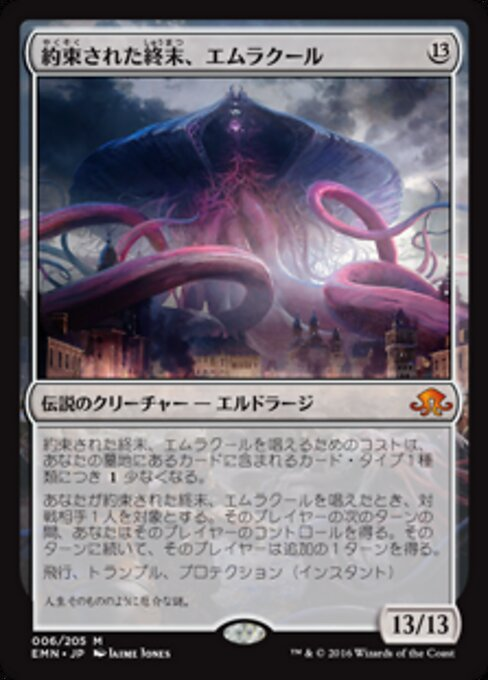
大量マナの出口
約束された終末、エムラクール Emrakul, the Promised End
代表：メイン4枚 比較6件中6件がメイン採用
唱えたとき相手の次のターンを操作する。墓地のカード・タイプ数で軽くなり、コンボなしでも唱えられる。
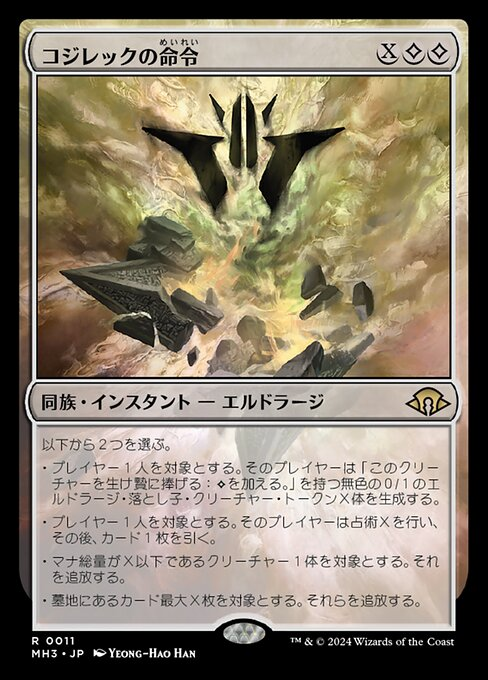
妨害とコンボ支援
コジレックの命令 Kozilek's Command
代表：メイン4枚 比較6件中6件がメイン採用
落とし子生成、占術＋ドロー、クリーチャー追放、墓地追放のうち2つ。相手に合わせて役割が変わる。
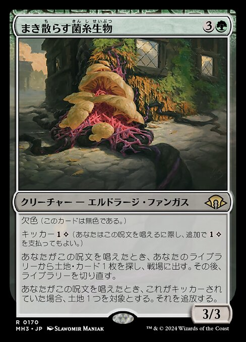
土地から伸ばす
まき散らす菌糸生物 Sowing Mycospawn
代表：メイン4枚 比較6件中6件がメイン採用
唱えたとき土地を探す。キッカーを払うと相手の土地も追放し、大型展開と土地妨害を両立する。
刃の実質的な追加枠
ウルザの物語 Urza's Saga
代表：メイン4枚 比較6件中6件がメイン採用
III章でマナ・コストが0 か1 のアーティファクトを出す。刃、ランタン、ドラムなどを選べる。
02
ターンごとの基本プラン 準備は2〜3ターン目から 1T 足場を作る 森から《古きものの活性》で足りない部品を探す。迷宮はマナ総量7以上の無色カードを刻印できれば2マナ土地になる。
2T コンボの本体を置く 鱗を出すか、《邪悪鳴らし》で4枚を見て土地・部品を回収し、落とし子も作る。
3T 二つの脅威を提示 刃を装備してループを狙う。除去を構えられたら、菌糸生物や物語の構築物で別の展開を選ぶ。
4T〜 大型か巨大な鱗で決着 エムラクールで相手の次のターンを操作し、飛行13/13や巨大な鱗で勝ち切る。コンボの成立だけでは勝利は確定しない。
03
動きを1手ずつ見る 反復コンボ 鱗＋刃：無色マナを増やすループ 戦場：刃を装備した鱗。鱗にカウンターがなく、順応用の1 G がある例。別の落とし子を生け贄にして始めることもできる。
STEP 1 / 6
順応を起動 1 G を払い、鱗に＋1/＋1カウンターを1個置く。
鱗のカウンター 1
← 戻る 次の動き →
1 2 3 4 5 6
順応を起動 1 G を払い、鱗に＋1/＋1カウンターを1個置く。 鱗のカウンター 1 落とし子が出る 鱗の誘発を解決し、0/1のエルドラージ・落とし子を1体作る。 落とし子 1体 落とし子を生け贄にする 落とし子自身のマナ能力でC を得る。マナ能力自体には対応できない。死亡で刃の能力が誘発する。 無色マナ ＋1 刃の誘発を解決 装備中の鱗にカウンターが1個増え、鱗の能力が再び誘発する。ここで相手は対応できる。 鱗のカウンター ＋1 新しい落とし子が出る 生成を解決すると再び落とし子が1体いる。手順3へ戻るたびに、マナと鱗の大きさが増える。 1周ごとにC が1増える 勝つための行動へ移る 必要な有限回数を宣言し、エムラクールなどを唱える。鱗の攻撃には召喚酔い・ブロッカーも考慮する。 資源を勝ち筋へ変換 この動きで得るもの： 得られるのは大量の無色マナと巨大な鱗。この代表75枚には《まばゆい肉掻き》も《歩行バリスタ》もないため、ループ中の直接ダメージは発生しない。
相手側：ここを止める 装備の起動、順応の起動、刃・鱗の誘発に対応して本体を除去する。《安らかなる眠り》は死亡を追放へ置換して刃を誘発させない。《呪われたトーテム像》は順応と落とし子のマナ能力を止める。
《墓掘りの檻》はこのトークン生成ループを止めない。 《真髄の針》で鱗を指定すると順応を止めるが、既存の落とし子の死亡から始まるループは止まらない。 エムラクールのターン操作は「唱えたとき」の誘発。呪文だけを打ち消しても誘発は残る。 04
構成と初手の考え方 メイン60枚の内訳
22 17 7 8 6
キープ候補 · 7枚の例 森 エルドラージの寺院 ウルザの物語 古きものの活性 日を浴びる繁殖鱗 邪悪鳴らし コジレックの命令
緑源、部品探索、鱗、相手への干渉が揃う。物語から刃を探せるため、手札に刃がなくても進行できる。
マリガン候補 · 7枚の例 森 森 約束された終末、エムラクール 約束された終末、エムラクール 約束された終末、エムラクール 七つの死の種父 血の長の刃
大型と刃だけで、鱗・探索・加速がない。通常の森2枚からでは序盤に意味のある動きが少ない。
05
操縦する側 / 対戦する側 自分が使うなら 刃を雑に装備して本体を失わない。除去がある相手には物語・菌糸生物の展開も使う。 《コジレックの命令》の墓地追放は御霊対策にもなる。自分のコンボに全マナを使う前に相手の勝ち筋を見る。 迷宮の刻印候補を初手で確認する。寺院の2マナは無色のエルドラージ呪文・エルドラージの能力に用途が限られる。 相手が使うなら 本体を早く除去し、物語がIII章へ届く前に装備品の準備を把握する。 墓地対策1枚だけで安心しない。大型エルドラージと構築物にも対応できる盤面を作る。 《記憶への放逐》は無色呪文や唱えたときの誘発に使える。何を打ち消すかを明確にする。 代表サイドの役割 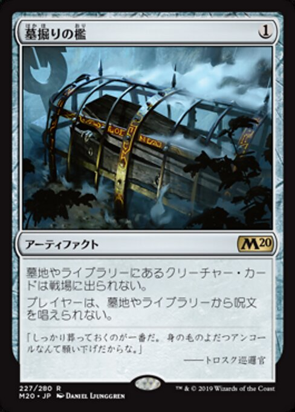
墓掘りの檻 ×2 御霊・生物サーチ対策
御霊で墓地から戻す、生物をライブラリーから出す動きを制限。鱗ループの対策にはならない。
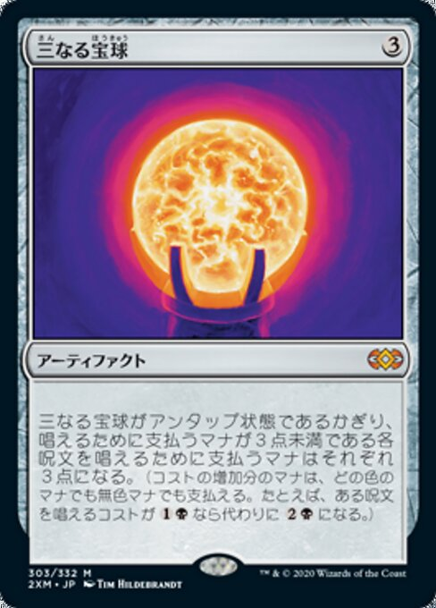
三なる宝球 ×2 ストーム・果敢対策
軽い呪文を連打する相手へ。自分の軽い探索も3マナになるので、展開後に置く。
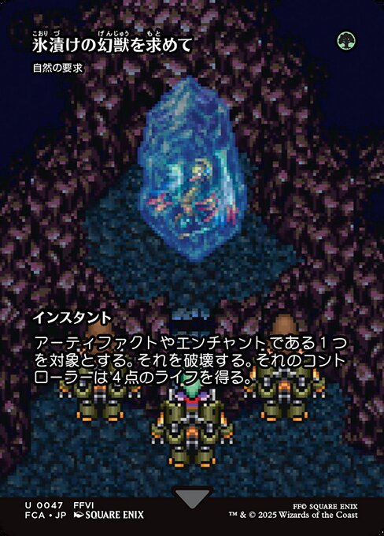
自然の要求 ×2 置物対策を壊す
眠り、正午、檻、針などを壊して勝ち筋を開く。
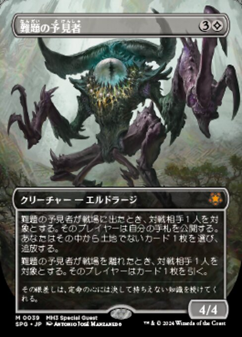
難題の予見者 ×2 対コンボの干渉
大型路線へ寄せながら、相手の要となる手札を抜く。
構築によって変わる点： 赤緑型では蛹や肉掻きによる別の中盤・ダメージ路線が加わる。相性表はここに載せた単緑型を基準に読む。
06
実在する代表リスト：60＋15枚 HouseOfManaMTG · MTGO Challenge 32 · 2026-09-29 · 5-8位
実際の75枚を原典で確認 ↗ · 比較した完全リスト6件から選んだ代表例。他の比較リストとの平均的な枚数差が最小の実在リストを使用。
MAIN DECK · 60枚 枚数 カード コスト 土地 22枚 2 耐え抜くもの、母聖樹 Boseiju, Who Endures — 4 エルドラージの寺院 Eldrazi Temple — 6 森 Forest — 1 宝石の洞窟 Gemstone Caverns — 1 変容する森林 Shifting Woodland — 4 ウギンの迷宮 Ugin's Labyrinth — 4 ウルザの物語 Urza's Saga — クリーチャー 17枚 4 日を浴びる繁殖鱗 Basking Broodscale 1 G 3 運命を貪るもの Devourer of Destiny 5 C C 4 約束された終末、エムラクール Emrakul, the Promised End 13 1 機能不全ダニ Haywire Mite 1 1 七つの死の種父 Sire of Seven Deaths 7 4 まき散らす菌糸生物 Sowing Mycospawn 3 G インスタント 7枚 3 四肢切断 Dismember 1 B/P B/P 4 コジレックの命令 Kozilek's Command X C C ソーサリー 8枚 4 古きものの活性 Ancient Stirrings G 4 邪悪鳴らし Malevolent Rumble 1 G アーティファクト 6枚 2 血の長の刃 Blade of the Bloodchief 1 1 魂標ランタン Soul-Guide Lantern 1 1 バネ葉の太鼓 Springleaf Drum 1 1 反発のタリスマン Talisman of Resilience 2 1 苛立たしいガラクタ Vexing Bauble 1
SIDEBOARD · 15枚 枚数 カード コスト 土地 1枚 1 魂の洞窟 Cavern of Souls — クリーチャー 4枚 1 七つの死の種父 Sire of Seven Deaths 7 1 存在を盗むもの Thief of Existence 1 C G 2 難題の予見者 Thought-Knot Seer 3 C インスタント 3枚 1 四肢切断 Dismember 1 B/P B/P 2 自然の要求 Nature's Claim G ソーサリー 1枚 1 全ては塵 All Is Dust 7 アーティファクト 6枚 2 墓掘りの檻 Grafdigger's Cage 1 1 真髄の針 Pithing Needle 1 2 三なる宝球 Trinisphere 3 1 苛立たしいガラクタ Vexing Bauble 1
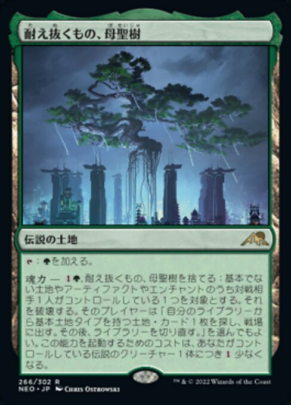
2枚 MAIN 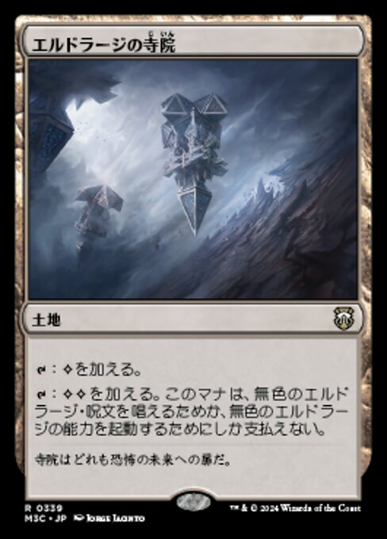
4枚 MAIN 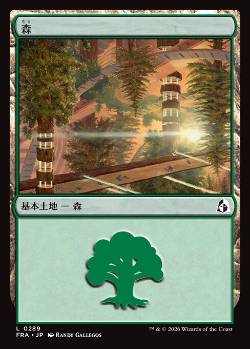
6枚 MAIN 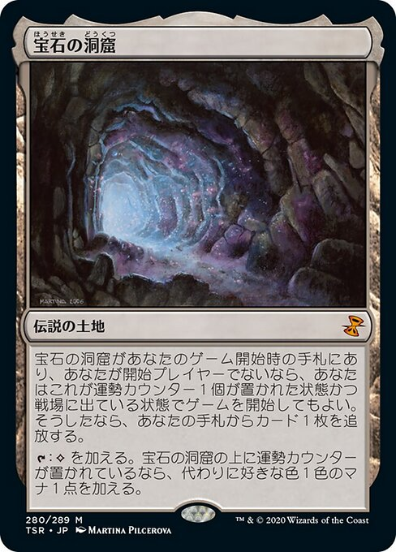
1枚 MAIN 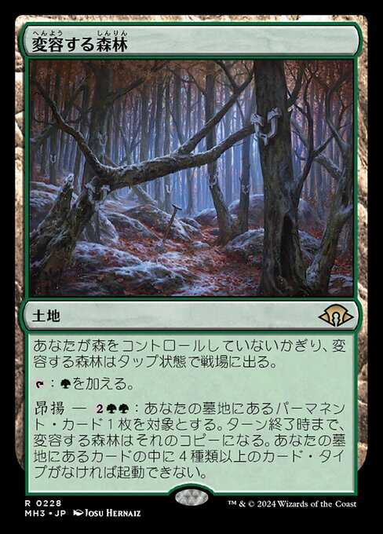
1枚 MAIN 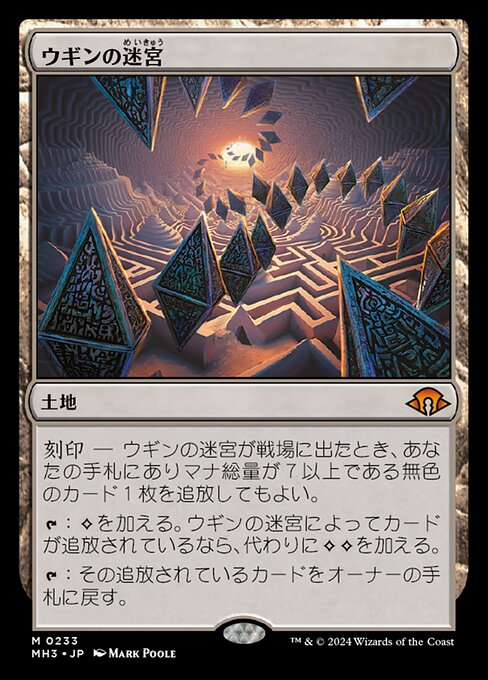
4枚 MAIN 4枚 MAIN 4枚 MAIN 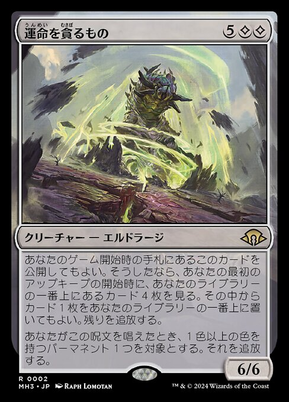
3枚 MAIN 4枚 MAIN 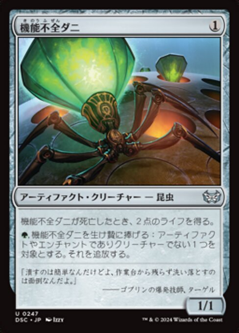
1枚 MAIN 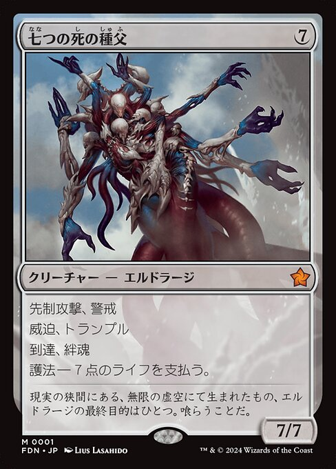
1枚 MAIN 4枚 MAIN 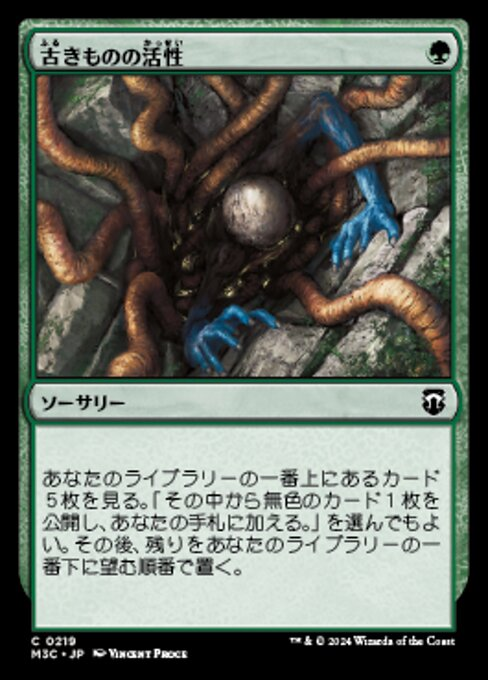
4枚 MAIN 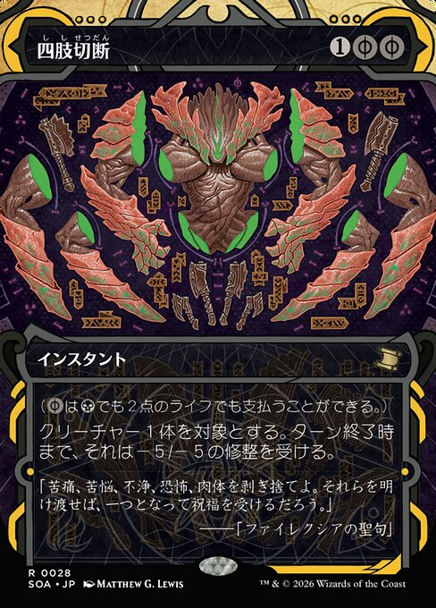
3枚 MAIN 4枚 MAIN 4枚 MAIN 2枚 MAIN 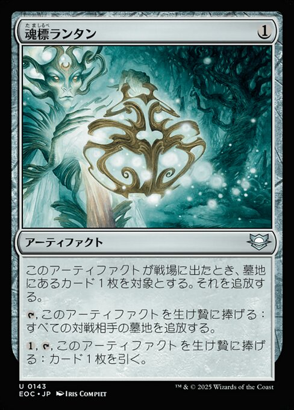
1枚 MAIN 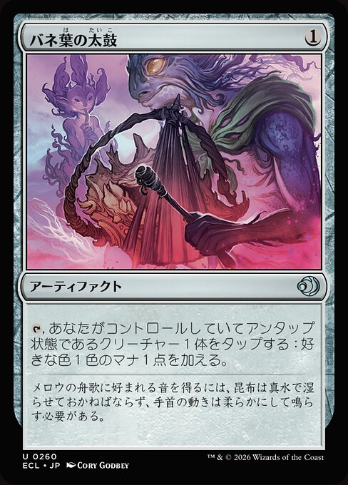
1枚 MAIN 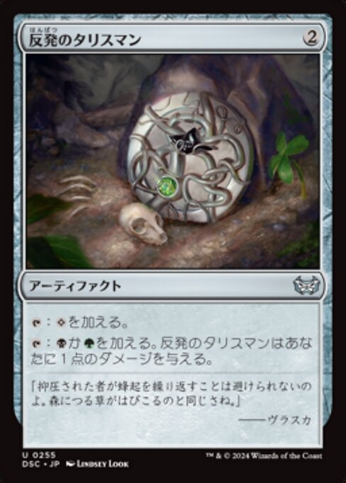
1枚 MAIN 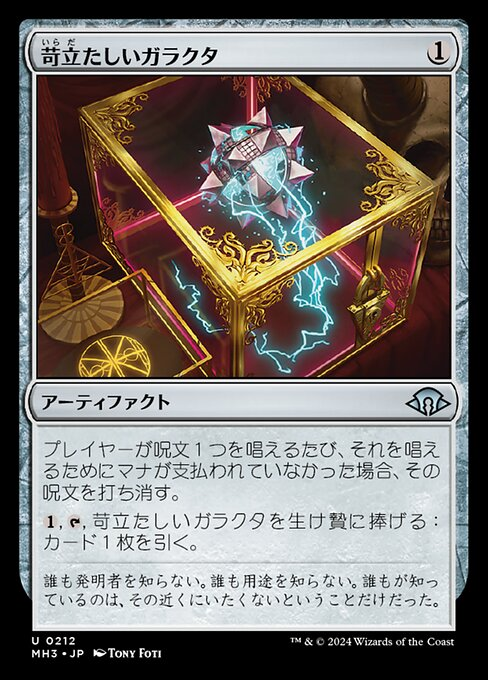
1枚 MAIN 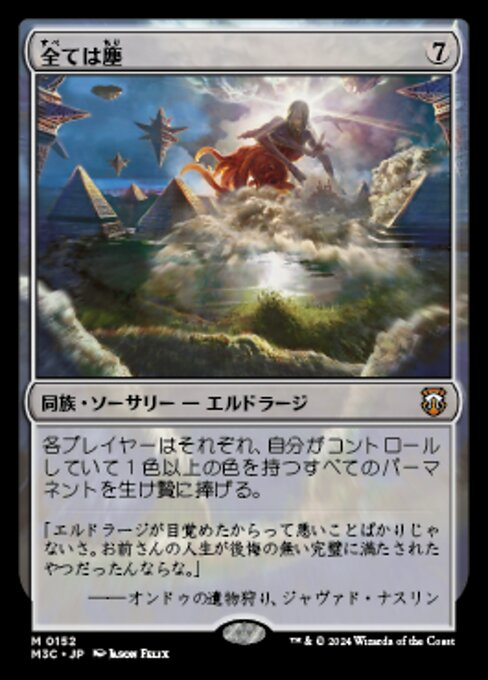
1枚 SIDE 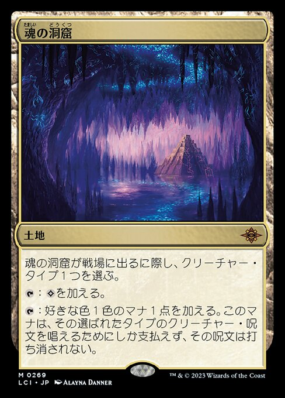
1枚 SIDE 1枚 SIDE 2枚 SIDE 2枚 SIDE 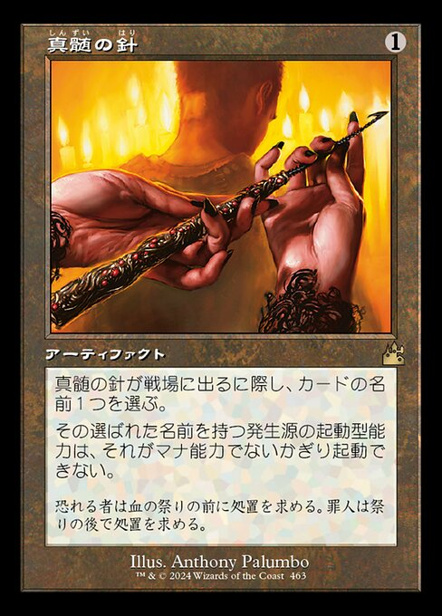
1枚 SIDE 1枚 SIDE 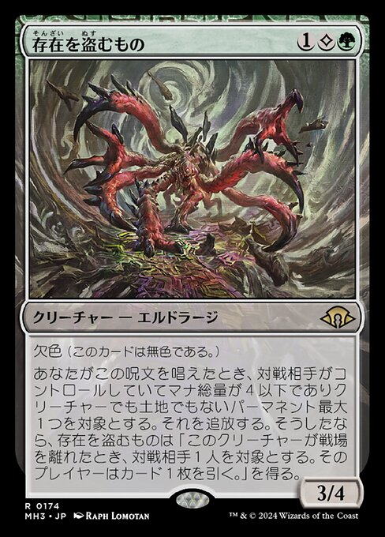
1枚 SIDE 2枚 SIDE 2枚 SIDE 1枚 SIDE 02
イゼット果敢 Izzet Cutter Prowess
U R アグロ＋呪文連打 分類全体 10%
軽い呪文が、打点と次の打ち手を生む。
速攻クリーチャーと《コーリ鋼の短刀》を軸に、0〜1マナの呪文を連打する。果敢や《僧院の速槍》の強化に加え、短刀が毎ターン新しい僧侶を供給するため、単体除去だけでは攻めを止めきれない。
分類と代表型： UR Aggroは青赤全体の分類で、マークタイド型も含む。直近6候補のうち5件がCutter Prowessだったため、その実在リストを解説する。10%すべてが同じ75枚ではない。
相手のデッキを見分ける： 1T《僧院の速槍》や《ドラゴンの怒りの媒介者》、0マナのガラクタ、2Tの短刀。
重要カード ターンの流れ コンボ・連動 構成・初手 対策・サイド 全75枚 01
このカードで理解する クリックで拡大 攻めを再生する装備品
コーリ鋼の短刀 Cori-Steel Cutter
代表：メイン4枚 比較6件中5件がメイン採用
各ターン2つ目の呪文で僧侶を作り、装備もできる。装備先は＋1/＋1・トランプル・速攻を得る。
最初の打点
僧院の速槍 Monastery Swiftspear
代表：メイン4枚 比較6件中5件がメイン採用
速攻＋果敢。非クリーチャー呪文を唱えるたび、そのターンだけ＋1/＋1。
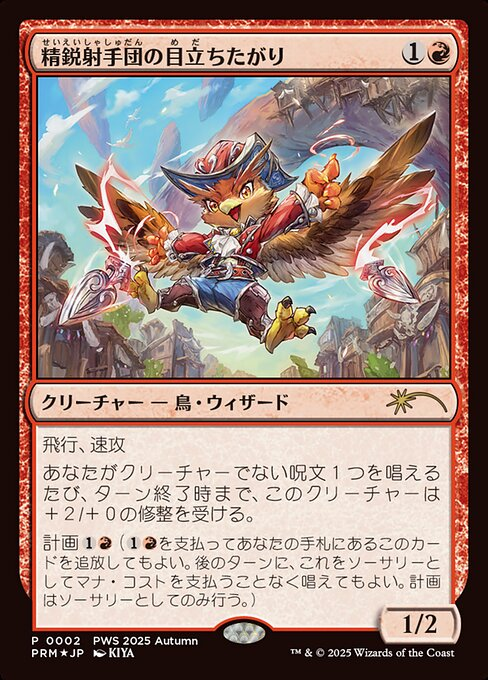
急に大きくなる飛行
精鋭射手団の目立ちたがり Slickshot Show-Off
代表：メイン2枚 比較6件中3件がメイン採用
非クリーチャー呪文ごとに＋2/＋0。計画から唱えるターンは他の呪文へマナを使える。
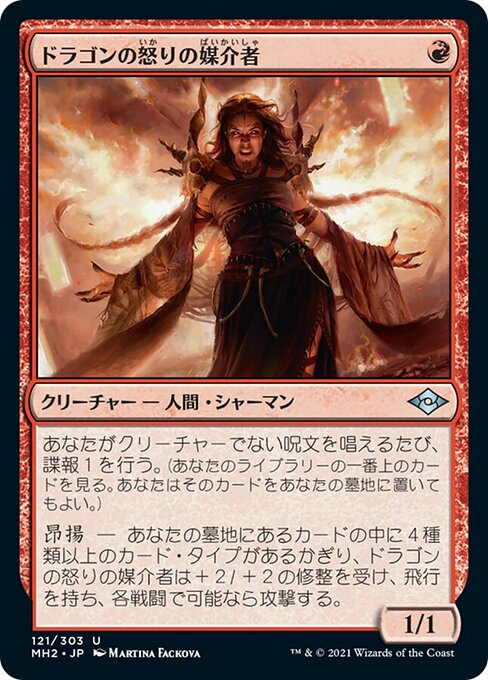
質を整える飛行脅威
ドラゴンの怒りの媒介者 Dragon's Rage Channeler
代表：メイン4枚 比較6件中6件がメイン採用
非クリーチャー呪文で諜報。墓地に4種類のカード・タイプを集めると3/3飛行になる。
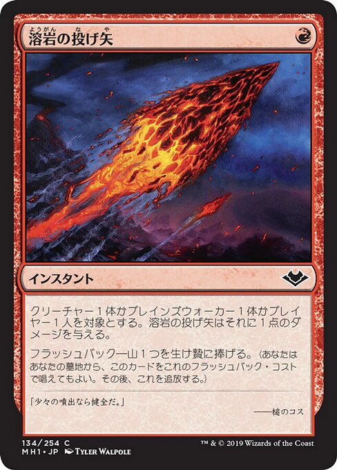
呪文2回ぶん
溶岩の投げ矢 Lava Dart
代表：メイン4枚 比較6件中5件がメイン採用
表から唱え、山を生け贄にしてフラッシュバック。1点除去と強化の誘発を同時に稼ぐ。
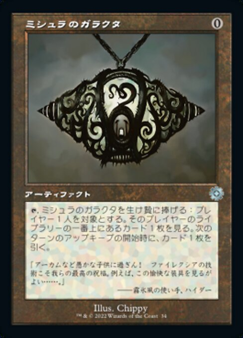
無料の連打部品
ミシュラのガラクタ Mishra's Bauble
代表：メイン4枚 比較6件中6件がメイン採用
0マナで短刀の2つ目の呪文を作れる。生け贄にすると次のアップキープにドロー。
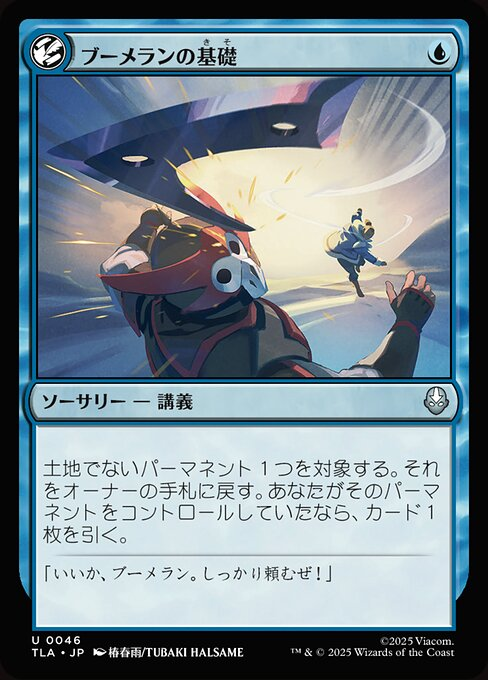
ブロッカーをどかす
ブーメランの基礎 Boomerang Basics
代表：メイン4枚 比較6件中3件がメイン採用
土地でない置物を戻す。自分の置物を戻した場合は1枚引ける。
02
ターンごとの基本プラン 1ターン目から攻撃準備 1T 速い脅威を置く 速槍か媒介者を展開。ガラクタのドローはその場ではなく次のアップキープ。
2T 短刀を軸にする 短刀→0マナ呪文で僧侶＋装備を作る。相手の除去・返しのコンボに合わせ、火力を残す判断もある。
3T 呪文をまとめて打点へ 飛行クリーチャー、短刀の僧侶、火力を組み合わせる。投げ矢のフラッシュバックで土地を失う点に注意。
4T〜 残りライフを削る 除去されても短刀から再展開。消耗戦では反復・定業で次の呪文を補充し、稲妻を本体へ回す。
03
動きを1手ずつ見る 打点エンジン 短刀→ガラクタ→変異原性の成長 このターン、まだ呪文を唱えていない。短刀・ガラクタ・変異原性の成長が手札、1 R と成長の代替コスト用ライフ2点がある。
STEP 1 / 5
短刀を唱える 1 R を払い、短刀が戦場に出る。これがこのターン1つ目の呪文。
呪文数 1
← 戻る 次の動き →
1 2 3 4 5
短刀を唱える 1 R を払い、短刀が戦場に出る。これがこのターン1つ目の呪文。 呪文数 1 ガラクタを唱える 0マナのガラクタが2つ目の呪文。短刀の能力が誘発する。 呪文数 2 僧侶を作り、装備する 1/1僧侶へ短刀を付けると2/2・速攻・トランプルになる。生成前に唱えたガラクタでは、この僧侶の果敢は誘発しない。 僧侶 2/2 成長を唱える ライフ2点で成長を唱え、僧侶を対象にする。果敢の＋1/＋1と成長の＋2/＋2が加わる。 僧侶 5/5 攻撃する そのターンは5/5速攻・トランプルで攻撃できる。ダメージはブロックや除去によって変わる。 次の終了時に強化が切れる この動きで得るもの： わずかなマナから大きな打点を出す、有限の連携。短刀は各ターン2つ目に1回だけ誘発する。
相手側：ここを止める 成長に対応する除去、短刀自体の破壊、僧侶生成の誘発への《記憶への放逐》など。High Noonの1ターン1呪文制限は短刀の誘発条件を封じる。
短刀を置く前に呪文を2つ唱えてしまうと、そのターンの短刀誘発を逃す。 果敢は非クリーチャー呪文で誘発するが、短刀はクリーチャー呪文も含む2つ目を数える。 墓地追放は媒介者の昂揚や投げ矢を弱めるが、短刀そのものは止めない。 04
構成と初手の考え方 メイン60枚の内訳
18 10 10 10 10 2
キープ候補 · 7枚の例 山 蒸気孔 僧院の速槍 コーリ鋼の短刀 ミシュラのガラクタ 稲妻 定業
1T脅威、2T短刀＋無料呪文、火力と探索がある。青源をいつアンタップで出すかも決められる。
マリガン候補 · 7枚の例 山 山 山 沸騰する小湖 蒸気孔 変異原性の成長 溶岩の投げ矢
土地5枚＋補助2枚。脅威も短刀も探索もなく、強化と火力の価値を出せない。
05
操縦する側 / 対戦する側 自分が使うなら 一度に全呪文を使うか、翌ターンの2つ目用に残すかを考える。 火力は本体だけへ撃たず、ドルイド・鱗など相手の勝ち筋を止めるためにも使う。 ライフ2点で成長を唱えること、フェッチ＋ショック、投げ矢の山生け贄をまとめて管理する。 相手が使うなら クリーチャー除去と短刀への対策を分けて用意する。 強化呪文へ対応できる状態を保つ。飛行の見せつけや昂揚した媒介者もブロック計算へ入れる。 サイド後は正午、全体除去、アーティファクト破壊が有効。遅い対策だけの手札は速い展開に間に合わない。 代表サイドの役割 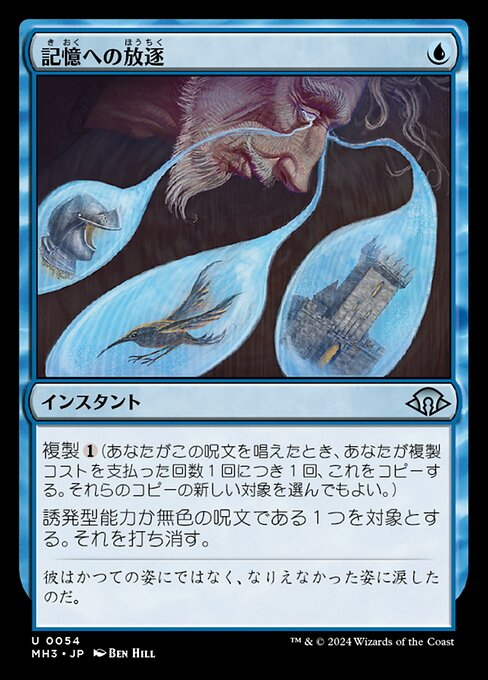
記憶への放逐 ×4 無色・誘発対策
大型エルドラージ、鱗の誘発、ストームの誘発に用途がある。
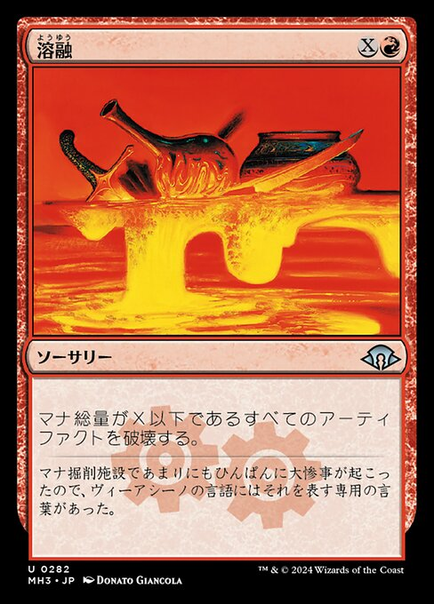
溶融 ×2 対アーティファクト
親和の盤面へ。ただし軍需品トークンを壊すと2点ずつ誘発する。
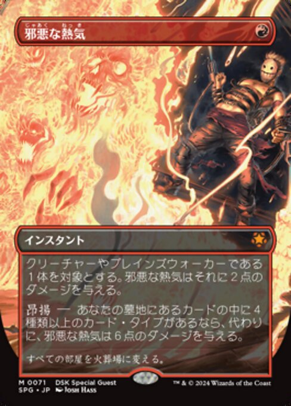
邪悪な熱気 ×3 追加の生物除去
コンボ生物や中型クリーチャーへ。昂揚の有無でダメージが変わる。
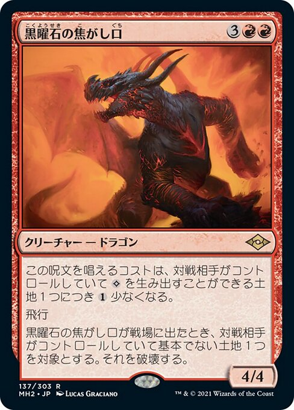
黒曜石の焦がし口 ×2 対特殊土地
トロン・物語・2マナ土地を攻める。
構築によって変わる点： 本例はメインから《トーモッドの墓所》2枚を採用。マークタイド型はカウンターと消耗戦への配分が違い、この打点手順とは分けて考える。
別型の実在リストを見る → 06
実在する代表リスト：60＋15枚 queirozale7 · MTGO League · 2026-09-27 · 掲載リスト（順位なし）
実際の75枚を原典で確認 ↗ · 比較した完全リスト6件から選んだ代表例。他の比較リストとの平均的な枚数差が最小の実在リストを使用。
MAIN DECK · 60枚 枚数 カード コスト 土地 18枚 1 乾燥台地 Arid Mesa — 4 血染めのぬかるみ Bloodstained Mire — 1 焦熱島嶼域 Fiery Islet — 3 山 Mountain — 3 沸騰する小湖 Scalding Tarn — 3 蒸気孔 Steam Vents — 1 轟音の滝 Thundering Falls — 2 樹木茂る山麓 Wooded Foothills — クリーチャー 10枚 4 ドラゴンの怒りの媒介者 Dragon's Rage Channeler R 4 僧院の速槍 Monastery Swiftspear R 2 精鋭射手団の目立ちたがり Slickshot Show-Off 1 R インスタント 10枚 4 溶岩の投げ矢 Lava Dart R 4 稲妻 Lightning Bolt R 2 変異原性の成長 Mutagenic Growth G/P ソーサリー 10枚 4 ブーメランの基礎 Boomerang Basics U 2 表現の反復 Expressive Iteration U R 4 定業 Preordain U アーティファクト 10枚 4 コーリ鋼の短刀 Cori-Steel Cutter 1 R 4 ミシュラのガラクタ Mishra's Bauble 0 2 トーモッドの墓所 Tormod's Crypt 0 エンチャント 2枚 2 嵐追いの才能 Stormchaser's Talent U
SIDEBOARD · 15枚 枚数 カード コスト クリーチャー 2枚 2 黒曜石の焦がし口 Obsidian Charmaw 3 R R インスタント 11枚 4 記憶への放逐 Consign to Memory U 2 呪文貫き Spell Pierce U 2 呪文嵌め Spell Snare U 3 邪悪な熱気 Unholy Heat R ソーサリー 2枚 2 溶融 Meltdown X R
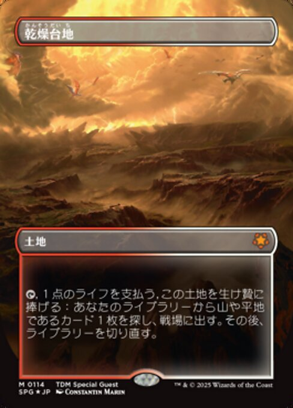
1枚 MAIN 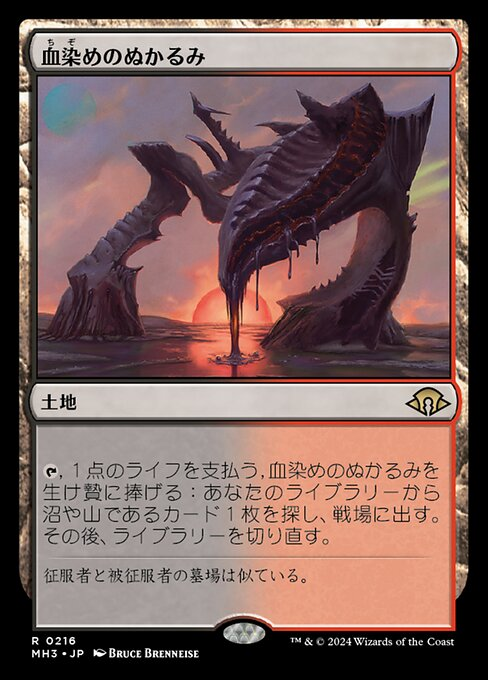
4枚 MAIN 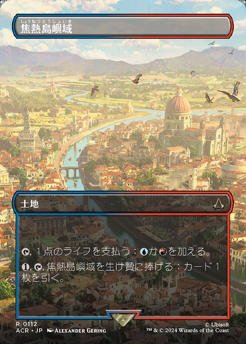
1枚 MAIN 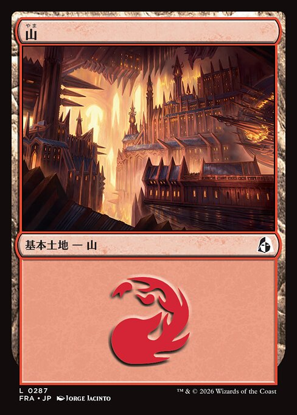
3枚 MAIN 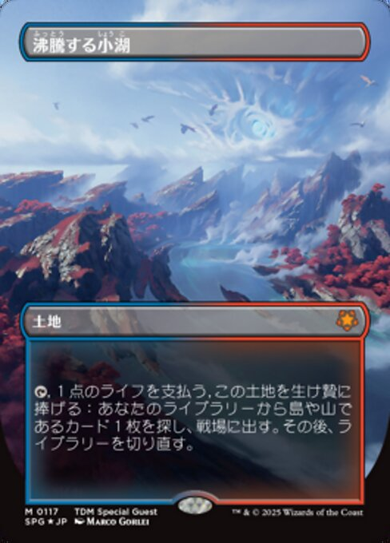
3枚 MAIN 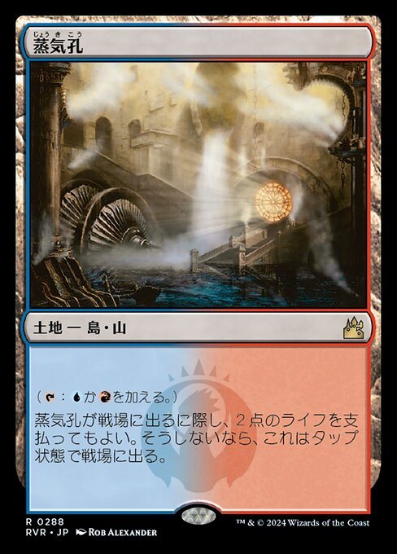
3枚 MAIN 1枚 MAIN 2枚 MAIN 4枚 MAIN 4枚 MAIN 2枚 MAIN 4枚 MAIN 2枚 MAIN 4枚 MAIN 4枚 MAIN 2枚 MAIN 4枚 MAIN 4枚 MAIN 4枚 MAIN 2枚 MAIN 2枚 MAIN 4枚 SIDE 2枚 SIDE 2枚 SIDE 2枚 SIDE 2枚 SIDE 3枚 SIDE 03
エスパー・ブリンク Esper Blink
W U B 干渉＋継続的なアドバンテージ 分類全体 8%
一度出したカードを、もう一度働かせる。
手札破壊と除去で相手を減速し、戦場に出たときの能力を《儚い存在》《溌剌の牧羊犬、フィリア》で使い直す。《量子の謎かけ屋》や大主を低コストで出してから明滅させると、期限や待ち時間を外した大型として残せる。
分類と代表型： Blink分類の直近6候補はすべてEsper Blink。この例は《骨の皇帝》入り。白黒型や青白型まで同じ構成・相性になるわけではない。
相手のデッキを見分ける： 思考囲い、致命的な一押し、フィリア、ベイルマークの大主、量子の謎かけ屋。
重要カード ターンの流れ コンボ・連動 構成・初手 対策・サイド 全75枚 01
このカードで理解する クリックで拡大 攻撃のたびに明滅
溌剌の牧羊犬、フィリア Phelia, Exuberant Shepherd
代表：メイン4枚 比較6件中6件がメイン採用
他の土地でない置物を終了ステップまで追放。味方の能力を再利用したり、相手のブロッカーを一時的に消す。
1マナの再利用
Ephemerate Ephemerate
代表：メイン3枚 比較6件中6件がメイン採用
味方生物を即座に追放して戻す。手札からなら反復で次のアップキープにもう一度使える。
除去＋絆魂の本体
孤独 Solitude
代表：メイン4枚 比較6件中6件がメイン採用
相手の生物を追放する。想起で唱えたときの生け贄誘発に対応して明滅すると本体を残せる。
2マナから大型ドロー源
量子の謎かけ屋 Quantum Riddler
代表：メイン4枚 比較6件中6件がメイン採用
ワープ1 U で出る。明滅で別オブジェクトにすると、元のワープの追放から外れて残る。
墓地を作り回収する
ベイルマークの大主 Overlord of the Balemurk
代表：メイン4枚 比較6件中6件がメイン採用
兆候1 B でも登場時能力が働く。フィリアで明滅させると、時間カウンターを持たないクリーチャーで戻る。
墓地から一時再展開
骨の皇帝 Emperor of Bones
代表：メイン3枚 比較6件中6件がメイン採用
戦闘開始に墓地のカードを追放し、順応でその生物を出す。生物を明滅すれば最終カウンターと一時的な生け贄の制約から外せる。
02
ターンごとの基本プラン 1T干渉 → 2Tから価値を積む 1T 相手の要を抜く 思考囲いか一押し。諜報土地を使うターンはテンポを失う分、次の動きを整える。
2T 価値の起点を置く フィリア、兆候の大主、ワープの謎かけ屋など。フィリアをいつ出せば次の攻撃へ間に合うかを見る。
3T 明滅で盤面と手札を伸ばす フィリアで大主を明滅、儚い存在で想起した孤独を残す。返しのコンボ用に除去を温存する場面もある。
4T〜 使い回しで差を広げる 飛行戦力、絆魂、繰り返す回収で消耗戦を制する。コンボ相手には、価値よりも妨害とクロックを優先。
03
動きを1手ずつ見る 明滅のルール連携 孤独の想起＋儚い存在 手札に孤独・儚い存在・別の白いカード。儚い存在を唱えるためのW がある。
STEP 1 / 5
想起で孤独を唱える 手札の別の白いカードを1枚追放して唱える。孤独が出ると、生物追放と想起の生け贄がそれぞれ誘発。
想起の生け贄はまだ未解決
← 戻る 次の動き →
1 2 3 4 5
想起で孤独を唱える 手札の別の白いカードを1枚追放して唱える。孤独が出ると、生物追放と想起の生け贄がそれぞれ誘発。 想起の生け贄はまだ未解決 生け贄に対応して明滅 想起の生け贄が解決する前に、孤独へ儚い存在を唱える。相手はこの呪文にも対応できる。 W を使う別の孤独として戻る 元の孤独を追放し、即座に戻す。戻った孤独は想起で唱えられていない新しいオブジェクト。登場時の除去も再び誘発。 孤独本体が残る 元の生け贄誘発を解決 元の孤独はもう戦場にいないので、新しい孤独を生け贄にはしない。 元の孤独への制約が外れる 次のアップキープに反復 儚い存在を手札から唱えていれば、次のアップキープに無料でもう一度唱えられる。 さらに登場時能力を再利用 この動きで得るもの： 白いカードと儚い存在も消費するが、除去を繰り返しながら3/2絆魂を盤面に残せる。除去対象が残っているかにも注意。
相手側：ここを止める 明滅に対応して対象を除去すると儚い存在は対象不適正で解決されず、反復もしない。《倦怠の宝珠》は登場時の除去を止める。
《孤独》の追放は、対象の生物のパワー分だけそのコントローラーのライフを増やす。 ワープで2マナ払っても謎かけ屋のマナ総量は5。《呪文嵌め》や《致命的な一押し》の条件は支払った額ではない。 フィリアは攻撃しないと明滅できない。出しただけでは兆候の大主をすぐ生物にできない。 04
構成と初手の考え方 メイン60枚の内訳
19 27 8 4 2
キープ候補 · 7枚の例 湿地の干潟 溢れかえる岸辺 思考囲い 致命的な一押し 溌剌の牧羊犬、フィリア ベイルマークの大主 Ephemerate
2土地、干渉2種類、価値の起点と明滅がある。白・黒をいつ確保するかを先に考える。
マリガン候補 · 7枚の例 平地 平地 量子の謎かけ屋 量子の謎かけ屋 骨の皇帝 思考囲い 致命的な一押し
通常のドローだけに頼ると青も黒も出ない。ワープと序盤干渉が使えないため、後手でもリスクが大きい。
05
操縦する側 / 対戦する側 自分が使うなら 相手の妨害へ儚い存在を合わせるか、自分の価値を伸ばすために使うかを選ぶ。 一押し4枚・思考囲い4枚がある。コンボ戦では価値を積むだけの初手より、干渉を含む初手を重視する。 土地の表面は19枚だが、ボガート1枚と魔女4枚の裏面も土地になり得る。すべてを呪文として使えるわけではない。 相手が使うなら フィリアを攻撃前に除去して、毎ターンの再利用を止める。 想起やワープの期限が解決する前に、明滅用の白マナと手札枚数を確認する。 除去を1回交換し続けるだけでは大主・謎かけ屋に追いつかない。速い勝ち筋や登場時能力への対策も検討する。 代表サイドの役割 氷砕き ×3 特殊土地を攻める
無色マナを出す土地などを破壊し、エルドラージ・トロンの展開を遅らせる。
真昼の決闘 ×2 連打を制限
ストームと果敢に強い。自分の同一ターンの展開＋明滅も制限される。
空の怒り ×3 広い盤面を流す
果敢、ボロス、親和へ。自分の軽い置物も巻き込むので盤面を確認。
Clarion Conqueror ×1 起動型能力を止める
生物・アーティファクト・プレインズウォーカーの起動を停止。自分の骨の皇帝やテフェリーにも影響する。
構築によって変わる点： 《儚い存在》は3枚、《フィリア》は4枚。ブリンク呪文だけを増やすと、対象や妨害が不足する。骨の皇帝を抜いた型は墓地・戦闘開始の扱いも変わる。
別型の実在リストを見る → 06
実在する代表リスト：60＋15枚 rastaf · MTGO Challenge 64 · 2026-09-29 · 3-4位
実際の75枚を原典で確認 ↗ · 比較した完全リスト6件から選んだ代表例。他の比較リストとの平均的な枚数差が最小の実在リストを使用。
MAIN DECK · 60枚 枚数 カード コスト 土地 19枚 4 溢れかえる岸辺 Flooded Strand — 2 神無き祭殿 Godless Shrine — 1 神聖なる泉 Hallowed Fountain — 4 湿地の干潟 Marsh Flats — 1 行き届いた書庫 Meticulous Archive — 2 平地 Plains — 1 汚染された三角州 Polluted Delta — 1 薄暗い裏通り Shadowy Backstreet — 1 沼 Swamp — 1 地底街の下水道 Undercity Sewers — 1 湿った墓 Watery Grave — クリーチャー 27枚 1 ボガートの獲物さらい Boggart Trawler 2 B 3 骨の皇帝 Emperor of Bones 1 B 3 ちらつき鬼火 Flickerwisp 1 W W 4 ベイルマークの大主 Overlord of the Balemurk 3 B B 4 溌剌の牧羊犬、フィリア Phelia, Exuberant Shepherd 1 W 4 量子の謎かけ屋 Quantum Riddler 3 U U 4 孤独 Solitude 3 W W 4 魔女の結界師 Witch Enchanter 3 W インスタント 8枚 1 記憶への放逐 Consign to Memory U 3 Ephemerate Ephemerate W 4 致命的な一押し Fatal Push B ソーサリー 4枚 4 思考囲い Thoughtseize B プレインズウォーカー 2枚 2 時を解す者、テフェリー Teferi, Time Raveler 1 W U
SIDEBOARD · 15枚 枚数 カード コスト クリーチャー 1枚 1 Clarion Conqueror Clarion Conqueror 2 W インスタント 5枚 3 記憶への放逐 Consign to Memory U 2 神秘の論争 Mystical Dispute 2 U ソーサリー 6枚 3 氷砕き Break the Ice B B 3 空の怒り Wrath of the Skies X W W エンチャント 2枚 2 真昼の決闘 High Noon 1 W プレインズウォーカー 1枚 1 夢を引き裂く者、アショク Ashiok, Dream Render 1 U/B U/B
4枚 MAIN 2枚 MAIN 1枚 MAIN 4枚 MAIN 1枚 MAIN 2枚 MAIN 1枚 MAIN 1枚 MAIN 1枚 MAIN 1枚 MAIN 1枚 MAIN 1枚 MAIN 3枚 MAIN 3枚 MAIN 4枚 MAIN 4枚 MAIN 4枚 MAIN 4枚 MAIN 4枚 MAIN 1枚 MAIN 3枚 MAIN 4枚 MAIN 4枚 MAIN 2枚 MAIN 1枚 SIDE 3枚 SIDE 1枚 SIDE 3枚 SIDE 2枚 SIDE 2枚 SIDE 3枚 SIDE
04
献身のドルイド・コンボ Devoted Druid Toolbox
G W B 生物サーチ＋無限マナ 分類全体 6%
必要な生物を探し、緑マナを勝ち筋へ換える。
マナを出す生物と8枚のX生物サーチを使うコンボデッキ。《献身のドルイド》＋《療治の侍臣》で緑マナを繰り返し作り、《薄暮見の徴募兵》やサーチでフィニッシャーへ接続する。アナグマモグラの仔・豊穣の力線による通常の大量マナ展開もある。
分類と代表型： Creatures Toolboxという広い分類から、直近6候補がすべてDevoted Comboだったため選択。6%は生物ツールボックス分類全体の数字。
相手のデッキを見分ける： マナ生物、アナグマモグラの仔、献身のドルイド、緑の太陽の頂点、歓喜する喧嘩屋、タイヴァー。
重要カード ターンの流れ コンボ・連動 構成・初手 対策・サイド 全75枚 01
このカードで理解する クリックで拡大 マナとアンタップ
献身のドルイド Devoted Druid
代表：メイン4枚 比較6件中6件がメイン採用
タップしてG 、−1/−1カウンターを置くコストで自分をアンタップ。通常は耐えられる回数が有限。
コストのカウンターを減らす
療治の侍臣 Vizier of Remedies
代表：メイン1枚 比較6件中6件がメイン採用
置かれる−1/−1カウンターを1個減らす。ドルイドのアンタップコストで実際にカウンターが置かれなくなる。
部品をライブラリーから出す
緑の太陽の頂点 Green Sun's Zenith
代表：メイン4枚 比較6件中6件がメイン採用
X以下の緑生物を探す。0ならドライアドの東屋、2ならドルイド。白い侍臣は探せない。
色を問わない生物サーチ
自然の律動 Nature's Rhythm
代表：メイン4枚 比較6件中6件がメイン採用
X以下の生物を出すので侍臣も探せる。墓地から調和で再利用できる。
生物マナを増量
アナグマモグラの仔 Badgermole Cub
代表：メイン4枚 比較6件中6件がメイン採用
土地1枚を生物にする。生物をマナのためにタップするたび、追加のG を得る。
待たずに能力を使う
歓喜する喧嘩屋、タイヴァー Tyvar, Jubilant Brawler
代表：メイン4枚 比較6件中6件がメイン採用
生物の起動を速攻を持つかのように行える。出したばかりのドルイドでも、タップ能力を使える。
無限マナの接続先
薄暮見の徴募兵 Duskwatch Recruiter
代表：メイン1枚 比較6件中6件がメイン採用
2 G で上3枚から生物を探す。十分なマナで繰り返し、フィニッシャーを手札に集める。
02
ターンごとの基本プラン 1T加速 → 2〜3Tに組み立て 1T マナを前倒し 極楽鳥・喜ぶハーフリング、または頂点X=0から東屋。初手の豊穣の力線でさらに加速する。
2T 本体と加速を置く ドルイドや仔を展開。手札・盤面に応じてタイヴァーを優先し、次の起動を早める。
3T 足りない部品を探す 自然の律動から侍臣、頂点から徴募兵など。除去にさらされたドルイドの扱いが重要。
決着 マナを攻撃へ換える タイヴァーの強化や孔蹄のビヒモスへつなぐ。豊穣の力線があれば、8マナの全体カウンター能力も繰り返せる。
03
動きを1手ずつ見る 反復コンボ ドルイド＋侍臣：緑マナの反復 ドルイドと侍臣が戦場。ドルイドのタップ能力を使える状態（ターンをまたぐか、タイヴァー／シャン・チーがいる）。
STEP 1 / 6
ドルイドをタップ ドルイドのマナ能力でG を得る。仔や豊穣の力線があれば追加のG も出る。
緑マナ ＋1以上
← 戻る 次の動き →
1 2 3 4 5 6
ドルイドをタップ ドルイドのマナ能力でG を得る。仔や豊穣の力線があれば追加のG も出る。 緑マナ ＋1以上 アンタップ能力を起動 −1/−1カウンターを1個置くコストを払う。侍臣の置換で、その個数が0になる。 ドルイドは縮まない アンタップを解決 マナ能力とは異なり、こちらの能力はスタックを使う。相手は解決前に本体や侍臣を除去できる。 ドルイドが再び起きる 必要な回数を繰り返す タップ→アンタップを繰り返し、必要な有限数の緑マナを得る。 緑マナを蓄える 出口を確保 徴募兵を繰り返し起動して生物を探すか、Xサーチでフィニッシャーを出す。頂点は緑生物限定。 手札・盤面にフィニッシャー 攻撃で勝ち切る 孔蹄の速攻、タイヴァーの全体強化、豊穣の力線のカウンターなどを使う。攻撃できる生物とブロックを確認。 無限マナから勝ち筋へ この動きで得るもの： 無限マナと、そのマナを使う出口は別に必要。相手の除去や妨害を越えて、攻撃・強化まで到達させる。
相手側：ここを止める 《呪われたトーテム像》《真髄の針》（ドルイド指定）でアンタップを止める。ドルイドのマナ能力は針では止まらない。《墓掘りの檻》はXサーチからの登場を妨げる。
頂点では白単色の侍臣を探せない。侍臣には自然の律動を使う。 速攻相当の能力がない、新しく出たドルイドはタップしてマナを出せない。 能力起動だけで勝てる盤面なら、正午の1呪文制限だけではループを止められない。 04
構成と初手の考え方 メイン60枚の内訳
21 21 8 2 4 4
キープ候補 · 7枚の例 森 吹きさらしの荒野 喜ぶハーフリング 献身のドルイド 自然の律動 歓喜する喧嘩屋、タイヴァー アナグマモグラの仔
加速、本体、侍臣を探す手段が揃う。タイヴァー用の黒源と、律動用の緑マナを土地で整える。
マリガン候補 · 7枚の例 森 森 孔蹄のビヒモス 猛打者、タイヴァー 豊穣の力線 豊穣の力線 苛立たしいガラクタ
力線2枚を初手から置けても、マナ生物・サーチがない。大きなカードへ早く接続できない。
05
操縦する側 / 対戦する側 自分が使うなら サーチを「その場の最大パワー」ではなく、現在足りない部品へ使う。 加速をすべて除去される初手も想定する。ドルイドへ全てを託すか、仔・力線から普通に大型を出すかを判断。 墓掘りの檻や起動禁止がある相手には、サイドの除去・置物破壊を先に通す。 相手が使うなら マナ生物やドルイドを早く除去し、サーチを唱えられる総マナを減らす。 ドルイドの起動へ対応して侍臣だけを除去しても、既に払われた起動コストは戻らない。次の周回からカウンターが置かれる。 能力禁止とサーチ対策を組み合わせる。仔からの通常展開や攻撃も残る。 代表サイドの役割 突然の衰微 ×2 軽い妨害置物・生物
正午、檻、トーテム像などを除去。打ち消されない点も役立つ。
塔の長官、ボロミア ×1 無料呪文を制限
0マナ呪文・ピッチ呪文などを牽制し、味方を破壊から守る能力もある。
再利用の賢者 ×1 サーチできる置物破壊
生物サーチから出して、コンボを止めるアーティファクトやエンチャントを割る。
思考囲い ×2 コンボを先に守る
相手の除去や勝ち筋を手札から抜いて、起動へ進む。
構築によって変わる点： 侍臣は1枚、律動は4枚。サーチ密度で1枚挿しを使う構成。コンボ部品だけでなく、サイドの1枚挿し生物も探せるのがツールボックスの意味。
06
実在する代表リスト：60＋15枚 KapoUzumaki11 · MTGO Challenge 16 · 2026-09-29 · 2位
実際の75枚を原典で確認 ↗ · 比較した完全リスト6件から選んだ代表例。他の比較リストとの平均的な枚数差が最小の実在リストを使用。
MAIN DECK · 60枚 枚数 カード コスト 土地 21枚 2 耐え抜くもの、母聖樹 Boseiju, Who Endures — 2 ドライアドの東屋 Dryad Arbor — 2 森 Forest — 1 宝石の洞窟 Gemstone Caverns — 1 地平線の梢 Horizon Canopy — 2 霧深い雨林 Misty Rainforest — 1 育成泥炭地 Nurturing Peatland — 2 草むした墓 Overgrown Tomb — 1 寺院の庭 Temple Garden — 1 地底の遺体安置所 Underground Mortuary — 2 新緑の地下墓地 Verdant Catacombs — 2 吹きさらしの荒野 Windswept Heath — 2 樹木茂る山麓 Wooded Foothills — クリーチャー 21枚 4 アナグマモグラの仔 Badgermole Cub 1 G 2 極楽鳥 Birds of Paradise G 1 孔蹄のビヒモス Craterhoof Behemoth 5 G G G 4 喜ぶハーフリング Delighted Halfling G 4 献身のドルイド Devoted Druid 1 G 1 薄暮見の徴募兵 Duskwatch Recruiter 1 G 1 悪魔の職工 Fiend Artisan B/G B/G 1 並外れた語り部 Formidable Speaker 2 G 1 カンフーの達人、シャン・チー Shang-Chi, Master of Kung Fu 1 G 1 猛打者、タイヴァー Tyvar, the Pummeler 1 G G 1 療治の侍臣 Vizier of Remedies 1 W ソーサリー 8枚 4 緑の太陽の頂点 Green Sun's Zenith X G 4 自然の律動 Nature's Rhythm X G G アーティファクト 2枚 1 アガサの魂の大釜 Agatha's Soul Cauldron 2 1 苛立たしいガラクタ Vexing Bauble 1 エンチャント 4枚 4 豊穣の力線 Leyline of Abundance 2 G G プレインズウォーカー 4枚 4 歓喜する喧嘩屋、タイヴァー Tyvar, Jubilant Brawler 1 B G
SIDEBOARD · 15枚 枚数 カード コスト クリーチャー 7枚 1 塔の長官、ボロミア Boromir, Warden of the Tower 2 W 1 門衛のスラル Doorkeeper Thrull 1 W 1 忍耐 Endurance 1 G G 1 ゴリラのゲリラ Guerrilla Gorilla 1 G 1 氷耕しの探検家 Icetill Explorer 2 G G 1 クロールの銛撃ち Kraul Harpooner 1 G 1 再利用の賢者 Reclamation Sage 2 G インスタント 2枚 2 突然の衰微 Abrupt Decay B G ソーサリー 3枚 1 毒を選べ Pick Your Poison G 2 思考囲い Thoughtseize B アーティファクト 2枚 2 虚空の杯 Chalice of the Void X X プレインズウォーカー 1枚 1 飢餓の潮流、グリスト Grist, the Hunger Tide 1 B G
2枚 MAIN 2枚 MAIN 2枚 MAIN 1枚 MAIN 1枚 MAIN 2枚 MAIN 1枚 MAIN 2枚 MAIN 1枚 MAIN 1枚 MAIN 2枚 MAIN 2枚 MAIN 2枚 MAIN 4枚 MAIN 2枚 MAIN 1枚 MAIN 4枚 MAIN 4枚 MAIN 1枚 MAIN 1枚 MAIN 1枚 MAIN 1枚 MAIN 1枚 MAIN 1枚 MAIN 4枚 MAIN 4枚 MAIN 1枚 MAIN 4枚 MAIN 4枚 MAIN 1枚 MAIN 2枚 SIDE 1枚 SIDE 2枚 SIDE 1枚 SIDE 1枚 SIDE 1枚 SIDE 1枚 SIDE 1枚 SIDE 1枚 SIDE 1枚 SIDE 1枚 SIDE 2枚 SIDE
05
ピナクル親和 Pinnacle Affinity
U R アーティファクト展開＋直接火力 分類全体 5%
置物が増えるほど、攻撃も爆発も大きくなる。
0マナのアーティファクトを大量に置き、《オパールのモックス》で加速。《ピナクルの特使》が飛行トークン、《武器製造》が2点ダメージになる軍需品を作る。《河童の砲手》や物語の構築物で殴る路線と、軍需品をまとめて爆発させる路線がある。
分類と代表型： Affinity分類の直近6候補のうち5件がPinnacle Affinity。本例は金属の叱責をサイドに3枚取り、メインは展開へ寄せている。
相手のデッキを見分ける： オパールのモックス、ガラクタ、トーモッドの墓所、武器製造、ピナクルの特使。
重要カード ターンの流れ コンボ・連動 構成・初手 対策・サイド 全75枚 01
このカードで理解する クリックで拡大 呪文を飛行戦力へ
ピナクルの特使 Pinnacle Emissary
代表：メイン4枚 比較6件中6件がメイン採用
アーティファクト呪文を唱えるたび、飛行1/1のドローンを作る。ワープなら1マナで出せるが期限がある。
置物を火薬へ
武器製造 Weapons Manufacturing
代表：メイン4枚 比較6件中5件がメイン採用
トークンでないアーティファクトが出るたび軍需品を作る。軍需品は戦場を離れると任意の対象へ2点。
0マナの加速
オパールのモックス Mox Opal
代表：メイン4枚 比較6件中6件がメイン採用
アーティファクトを3つ以上揃えると色マナが出る。伝説なので同時に残せるのは1枚。
大きくなる回避能力
河童の砲手 Kappa Cannoneer
代表：メイン4枚 比較6件中6件がメイン採用
即席で軽くし、アーティファクト登場ごとに成長。そのターンはブロックされず、護法4 も持つ。
軍需品の点火装置
仕組まれた爆薬 Engineered Explosives
代表：メイン4枚 比較6件中6件がメイン採用
カウンター0個で起動すると、マナ総量0のトークンや置物をまとめて破壊できる。
狙った軍需品を消費
ギックスのかぎ爪 Claws of Gix
代表：メイン3枚 比較6件中5件がメイン採用
1 と置物の生け贄でライフ1点。軍需品なら、それに加えて2点ダメージが誘発する。
墓地から再び唱える
湖に潜む者、エムリー Emry, Lurker of the Loch
代表：メイン3枚 比較6件中3件がメイン採用
落ちたガラクタや爆薬を唱え直し、特使と武器製造をまた誘発させる。
02
ターンごとの基本プラン 0マナから盤面を広げる 1T 0マナを展開する ガラクタ、墓所、モックスなど。ワープの特使を置いてから0マナを唱えると飛行トークンが増える。
2T 武器製造を設置 以降のトークンでないアーティファクト登場で軍需品を貯める。出す順番で最終打点が大きく変わる。
3T 河童・構築物が攻める 即席の河童や物語の構築物を展開。軍需品もアーティファクトなので、即席や構築物の大きさに貢献。
決着 攻撃か点火かを選ぶ 爆薬0やギックスのかぎ爪で軍需品を離れさせて火力へ。相手の全体破壊も軍需品のダメージを発生させる。
03
動きを1手ずつ見る 有限のダメージ連携 武器製造＋爆薬0：軍需品をまとめて点火 武器製造が戦場。ここからガラクタ・墓所・モックス・X=0の爆薬を1枚ずつ出す例。爆薬起動用の2マナを確保する。
STEP 1 / 5
トークンでない置物を出す ガラクタ・墓所・モックスが順に出る。それぞれ武器製造が誘発し、軍需品を1個作る。
軍需品 3個
← 戻る 次の動き →
1 2 3 4 5
トークンでない置物を出す ガラクタ・墓所・モックスが順に出る。それぞれ武器製造が誘発し、軍需品を1個作る。 軍需品 3個 爆薬をX=0で出す 0マナで爆薬を唱える。カウンターは0個。爆薬自体もトークンでないアーティファクトなので軍需品が1個増える。 軍需品 合計4個 爆薬を起動 2マナを払い、爆薬を生け贄にする。この起動はスタックを使う。 カウンター0個の起動 0マナの置物を破壊 解決すると軍需品4個や0マナ置物、ドローンなどを破壊する。軍需品の「離れたとき」が4回誘発。 2点の誘発が4個 各誘発の対象を決める 本体へ集めれば合計8点。生物に分けて盤面を開けることもできる。 本体へなら8点 この動きで得るもの： この例は8点の有限ダメージ。特使が作るドローンはトークンなので、武器製造を追加誘発させない。軍需品の数を確認してから点火する。
相手側：ここを止める 軍需品が貯まる前に武器製造を除去する。カーンは爆薬・かぎ爪・モックスの起動を止めるが、軍需品の誘発能力は止めない。
軍需品を追放・手札へ戻しても「戦場を離れた」ので2点が誘発する。 《溶融》や《空の怒り》で軍需品を消すと、ダメージを受ける可能性がある。残りライフを先に計算する。 物語から置物を出すのは「唱える」ではない。武器製造は誘発するが、特使は誘発しない。 04
構成と初手の考え方 メイン60枚の内訳
18 11 2 25 4
キープ候補 · 7枚の例 尖塔断の運河 焦熱島嶼域 ピナクルの特使 武器製造 オパールのモックス ミシュラのガラクタ トーモッドの墓所
2土地、エンジン2種、0マナ置物3種。先に特使か製造かを置く順番で、飛行戦力と軍需品の配分を変えられる。
マリガン候補 · 7枚の例 島 島 河童の砲手 河童の砲手 河童の砲手 武器製造 物読み
置物が足りず、即席・親和・製造の価値が立ち上がらない。大型3枚が早期には働きにくい。
05
操縦する側 / 対戦する側 自分が使うなら 特使は呪文、武器製造は登場を数える。サーチ・トークン・唱え直しを混同しない。 モックスの金属術や即席に必要な置物を、先に生け贄にしない。 相手の全体除去へ備え、軍需品を残す・打ち消す・点火するのどれが勝ちにつながるか見る。 相手が使うなら 特使と武器製造のどちらが現在のエンジンかを見て対処する。 河童を対象に取るなら護法4 を払えるか確認。ブロックできないターンの攻撃にも備える。 カーン・置物破壊・打ち消しを適切な時点で使う。貯まった軍需品をまとめて消す前に被ダメージを確認。 代表サイドの役割 金属の叱責 ×3 妨害を越える
即席で軽くなる打ち消し。全体除去や相手のコンボを防ぐ。
減衰球 ×1 トロン・ストーム
2マナ以上出す土地と呪文連打を抑える。自分の0マナ連打にも追加税がかかる。
感電破 ×3 コンボ生物へ火力
金属術なら4点。鱗・ドルイドなどを倒し、本体への最後の数点にも使う。
真髄の針 ×1 起動する脅威へ
カーン、ドルイドのアンタップ、ギックスのかぎ爪など。マナ能力には効かない。
構築によって変わる点： 爆薬4・墓所4・かぎ爪3と、マナ総量0の密度が高い。典型的な昔の親和と違い、軍需品の有限火力を大切に扱う。
別型の実在リストを見る → 06
実在する代表リスト：60＋15枚 Sebastian0722 · MTGO Challenge 16 · 2026-09-29 · 14位
実際の75枚を原典で確認 ↗ · 比較した完全リスト6件から選んだ代表例。他の比較リストとの平均的な枚数差が最小の実在リストを使用。
MAIN DECK · 60枚 枚数 カード コスト 土地 18枚 4 焦熱島嶼域 Fiery Islet — 2 島 Island — 3 シヴの浅瀬 Shivan Reef — 4 尖塔断の運河 Spirebluff Canal — 1 蒸気孔 Steam Vents — 4 ウルザの物語 Urza's Saga — クリーチャー 11枚 3 湖に潜む者、エムリー Emry, Lurker of the Loch 2 U 4 河童の砲手 Kappa Cannoneer 5 U 4 ピナクルの特使 Pinnacle Emissary 1 U R ソーサリー 2枚 1 定業 Preordain U 1 物読み Thoughtcast 4 U アーティファクト 25枚 3 ギックスのかぎ爪 Claws of Gix 0 4 仕組まれた爆薬 Engineered Explosives X 4 ミシュラのガラクタ Mishra's Bauble 0 4 オパールのモックス Mox Opal 0 1 真髄の針 Pithing Needle 1 1 影槍 Shadowspear 1 1 スケートボード Skateboard 1 4 トーモッドの墓所 Tormod's Crypt 0 3 溶接の壺 Welding Jar 0 エンチャント 4枚 4 武器製造 Weapons Manufacturing 1 R
SIDEBOARD · 15枚 枚数 カード コスト インスタント 10枚 3 記憶への放逐 Consign to Memory U 3 感電破 Galvanic Blast R 3 金属の叱責 Metallic Rebuke 2 U 1 大梟の小夜曲 Strix Serenade U ソーサリー 1枚 1 鞭打ち炎 Whipflare 1 R アーティファクト 4枚 1 減衰球 Damping Sphere 2 1 墓掘りの檻 Grafdigger's Cage 1 1 真髄の針 Pithing Needle 1 1 苛立たしいガラクタ Vexing Bauble 1
4枚 MAIN 2枚 MAIN 3枚 MAIN 4枚 MAIN 1枚 MAIN 4枚 MAIN 3枚 MAIN 4枚 MAIN 4枚 MAIN 1枚 MAIN 1枚 MAIN 3枚 MAIN 4枚 MAIN 4枚 MAIN 4枚 MAIN 1枚 MAIN 1枚 MAIN 1枚 MAIN 4枚 MAIN 4枚 MAIN 3枚 MAIN 3枚 SIDE 1枚 SIDE 3枚 SIDE 1枚 SIDE 3枚 SIDE 1枚 SIDE 1枚 SIDE 1枚 SIDE 1枚 SIDE
06
ウルザトロン Eldrazi / Ugin Tron
G C 大量マナ＋ロック 分類全体 5%
土地3枚を7マナへ。返しを許さない大型へ。
鉱山・魔力炉・塔の3種類が揃うと、1回ずつタップするだけで7マナ。《大いなる創造者、カーン》から対策アーティファクトを取り、《嵐の目、ウギン》やウラモグで盤面を制圧する。寺院・迷宮からのエルドラージ展開も併用し、毎回3種を揃えるだけのデッキではない。
分類と代表型： UrzaTron分類の完全な75枚を持つ5候補から選択。本例は菌糸生物・ウギン・ウラモグ型で、メインに難題の予見者を採っていない。
相手のデッキを見分ける： 探検の地図、ウルザ3種、寺院・迷宮、カーン。
重要カード ターンの流れ コンボ・連動 構成・初手 対策・サイド 全75枚 01
このカードで理解する クリックで拡大 3種セットの3マナ
ウルザの塔 Urza's Tower
代表：メイン4枚 比較5件中5件がメイン採用
鉱山と魔力炉を両方コントロールすると3マナ。残り2種は各2マナになり合計7。
足りない土地を探す
探検の地図 Expedition Map
代表：メイン4枚 比較5件中5件がメイン採用
2マナ＋タップ＋生け贄で任意の土地を手札へ。トロンの不足種類や必要な土地を選ぶ。
サイドを道具箱にする
大いなる創造者、カーン Karn, the Great Creator
代表：メイン4枚 比較5件中5件がメイン採用
相手のアーティファクト起動を止め、−2でサイドのアーティファクトを手札へ。取ったカードのマナも必要。
唱えるたびに追放
嵐の目、ウギン Ugin, Eye of the Storms
代表：メイン4枚 比較5件中5件がメイン採用
自身を唱えたときと、以後の無色呪文で有色置物を追放。＋2は回復＋ドロー、0は無色3マナ。
土地を整え、相手を削る
まき散らす菌糸生物 Sowing Mycospawn
代表：メイン4枚 比較5件中4件がメイン採用
土地サーチでマナ基盤を整える。キッカーを払った唱え方なら相手の土地も追放。
最終的な制圧
絶え間ない飢餓、ウラモグ Ulamog, the Ceaseless Hunger
代表：メイン2枚 比較5件中3件がメイン採用
唱えたとき置物2つを追放し、攻撃するたび相手の山札20枚を追放する。
02
ターンごとの基本プラン 3種類の土地 → 大型呪文 1T 地図と2マナ土地 地図を置くか、迷宮でマナを伸ばす。3種を揃える初手か、エルドラージ路線の初手かを見分ける。
2T マナを整える 地図を起動して足りないウルザ土地を探す、タリスマンを出すなど。
3T 大きな行動へ トロンが揃えば7マナ。ウギン、カーン＋対策、菌糸生物などから相手に合う行動を選ぶ。
4T〜 ロックと大型で終える 相手の起動を止めたり、罠の橋で攻撃を制限。ウラモグや連続する無色呪文で盤面を削る。
03
動きを1手ずつ見る マナ基盤と道具箱 鉱山＋魔力炉＋塔＝7マナ ウルザの鉱山・魔力炉・塔を1枚ずつコントロールしている。土地がすべてアンタップしている。
STEP 1 / 5
3種類の名称を揃える 同じ塔を3枚では成立しない。鉱山・魔力炉・塔が少なくとも1枚ずつ必要。
鉱山・魔力炉・塔
← 戻る 次の動き →
1 2 3 4 5
3種類の名称を揃える 同じ塔を3枚では成立しない。鉱山・魔力炉・塔が少なくとも1枚ずつ必要。 鉱山・魔力炉・塔 土地の出力が変わる 鉱山2、魔力炉2、塔3。各土地1枚ずつをタップすると合計C 7点。 2＋2＋3＝7 カーンを唱える例 4マナでカーンを唱えると、この例では3マナ残る。−2で必要なアーティファクトを手札へ。 残り3マナ 対策も唱える 呪われたトーテム像は2マナ、三なる宝球は3マナ。対策を選ぶ際は取ることと唱えることの両方を考える。 相手に合うロック 大型路線も選べる カーンを使わず7マナのウギンを唱える選択もある。土地を揃えることは目的ではなく、相手を制圧する手段。 盤面に合わせる この動きで得るもの： 無限マナではなく、3枚の土地から7マナを出す基盤。カーンのサイドはメイン中も使う道具箱なので、サイド交換で全部抜かない。
相手側：ここを止める 地図の起動を止める、土地を破壊・追放する、血染めの月や減衰球で出力を落とす。カーンの起動には真髄の針も使える。
寺院の2マナは無色のエルドラージ呪文などに限定。《コジレックの命令》は同族・インスタント — エルドラージなので使える。カーンには使えない。 ウギンの有色置物追放は、無色の置物を対象にできない。カーンでアーティファクトの能力を抑える線も見る。 サイドの《マイコシンスの格子》によるロックは掲載しない。格子はモダンで禁止。 04
構成と初手の考え方 メイン60枚の内訳
23 10 6 13 8
キープ候補 · 7枚の例 ウルザの鉱山 ウルザの魔力炉 探検の地図 大いなる創造者、カーン 嵐の目、ウギン 四肢切断 反発のタリスマン
1T地図→2T地図起動で塔を探し、3Tトロンを狙える。相手が速い場合の四肢切断もある。
マリガン候補 · 7枚の例 森 森 絶え間ない飢餓、ウラモグ 絶え間ない飢餓、ウラモグ 嵐の目、ウギン 嵐の目、ウギン 大いなる創造者、カーン
通常の森2枚だけで、地図・タリスマン・2マナ土地がない。大型ばかりで序盤に干渉できない。
05
操縦する側 / 対戦する側 自分が使うなら 土地が揃わない手札でも、迷宮の刻印と寺院の出力から何が何ターンで出せるか計算する。 カーンで「一番強いカード」より「今負ける原因を止めるカード」を取る。 呪文の打ち消しと唱えたときの誘発の打ち消しを分けて理解する。 相手が使うなら カーンを放置するとサイドから対策が続く。ロックが出る前にクロックやコンボを通す。 手札破壊や軽いカウンターだけで長期戦をしない。1枚の大型で交換枚数がひっくり返る。 土地対策を何ターン目に使うか決める。1枚の破壊だけでは地図・菌糸生物で再建され得る。 代表サイドの役割 呪われたトーテム像 ×3 鱗・ドルイド
生物の起動型能力を止める。落とし子のマナ能力も止まる。
倦怠の宝珠 ×1 登場時能力
ブリンクや御霊の登場時能力へ。唱えたときの能力は止めない。
三なる宝球 ×1 低コスト連打
果敢・ストームへ。唱える呪文の実際のマナ支払いを最低3マナにする。
罠の橋 ×1 攻撃を制限
自分の手札枚数よりパワーの大きい生物は攻撃できない。直接火力までは止めない。
液鋼の塗膜 ×1 カーンとの土地干渉
相手の土地をアーティファクト化すると、カーンがそのマナ能力も止める。
構築によって変わる点： 対策アーティファクトは「サイドインする札」と「カーンから取る札」を分ける。ゲーム1からサイドが戦略の一部。
06
実在する代表リスト：60＋15枚 ejk · MTGO Challenge 32 · 2026-09-29 · 3-4位
実際の75枚を原典で確認 ↗ · 比較した完全リスト5件から選んだ代表例。他の比較リストとの平均的な枚数差が最小の実在リストを使用。
MAIN DECK · 60枚 枚数 カード コスト 土地 23枚 1 アブスターゴ・エンターテイメント社 Abstergo Entertainment — 4 エルドラージの寺院 Eldrazi Temple — 2 森 Forest — 4 ウギンの迷宮 Ugin's Labyrinth — 4 ウルザの鉱山 Urza's Mine — 4 ウルザの魔力炉 Urza's Power Plant — 4 ウルザの塔 Urza's Tower — クリーチャー 10枚 4 運命を貪るもの Devourer of Destiny 5 C C 4 まき散らす菌糸生物 Sowing Mycospawn 3 G 2 絶え間ない飢餓、ウラモグ Ulamog, the Ceaseless Hunger 10 インスタント 6枚 2 四肢切断 Dismember 1 B/P B/P 4 コジレックの命令 Kozilek's Command X C C アーティファクト 13枚 4 探検の地図 Expedition Map 1 3 巨人の大岩 Giant's Boulder 1 4 反発のタリスマン Talisman of Resilience 2 2 三なる宝球 Trinisphere 3 プレインズウォーカー 8枚 4 大いなる創造者、カーン Karn, the Great Creator 4 4 嵐の目、ウギン Ugin, Eye of the Storms 7
SIDEBOARD · 15枚 枚数 カード コスト クリーチャー 1枚 1 街並みの地ならし屋 Cityscape Leveler 8 アーティファクト 14枚 1 虚空の杯 Chalice of the Void X X 3 呪われたトーテム像 Cursed Totem 2 2 攪乱のフルート Disruptor Flute 2 1 罠の橋 Ensnaring Bridge 3 1 殲滅戦艦 Extinguisher Battleship 8 1 墓掘りの檻 Grafdigger's Cage 1 1 液鋼の塗膜 Liquimetal Coating 2 1 トーモッドの墓所 Tormod's Crypt 0 1 倦怠の宝珠 Torpor Orb 2 1 三なる宝球 Trinisphere 3 1 苛立たしいガラクタ Vexing Bauble 1
1枚 MAIN 4枚 MAIN 2枚 MAIN 4枚 MAIN 4枚 MAIN 4枚 MAIN 4枚 MAIN 4枚 MAIN 4枚 MAIN 2枚 MAIN 2枚 MAIN 4枚 MAIN 4枚 MAIN 3枚 MAIN 4枚 MAIN 4枚 MAIN 2枚 MAIN 4枚 MAIN 1枚 SIDE 1枚 SIDE 3枚 SIDE 2枚 SIDE 1枚 SIDE 1枚 SIDE 1枚 SIDE 1枚 SIDE 1枚 SIDE 1枚 SIDE 1枚 SIDE 1枚 SIDE
07
御霊の復讐 Esper Goryo's Vengeance
W U B 墓地コンボ＋大型の価値 分類全体 5%
墓地の伝説を呼び戻し、その価値を残す。
《信仰の繕い》《超能力蛙》で大型伝説を墓地へ送り、《御霊の復讐》でアトラクサやグリセルブランドを一時的に戻す。速攻の攻撃と登場時能力で差をつけ、儚い存在で戻せば一時的な追放の制約から外して盤面に残せる。
分類と代表型： Instant Reanimator分類のエスパー御霊型。青黒のPersist型など、伝説以外を釣る別のリアニメイトとは区別する。
相手のデッキを見分ける： 信仰の繕い、超能力蛙、アトラクサ、御霊の復讐。
重要カード ターンの流れ コンボ・連動 構成・初手 対策・サイド 全75枚 01
このカードで理解する クリックで拡大 2マナの踏み倒し
御霊の復讐 Goryo's Vengeance
代表：メイン4枚 比較6件中6件がメイン採用
墓地の伝説のクリーチャーを戻し、速攻を与える。次の終了ステップに追放する遅延誘発が付く。
戻すだけで大きな補充
偉大なる統一者、アトラクサ Atraxa, Grand Unifier
代表：メイン4枚 比較6件中6件がメイン採用
上10枚からカード・タイプごとに最大1枚ずつ手札へ。飛行・警戒・接死・絆魂の7/7。
ライフを手札へ
グリセルブランド Griselbrand
代表：メイン1枚 比較6件中6件がメイン採用
7点を払い7枚引く。絆魂で回復して、追加の明滅や妨害へつなぐ。
墓地へ送る準備
信仰の繕い Faithful Mending
代表：メイン3枚 比較6件中6件がメイン採用
2点回復し、2枚引いて2枚捨てる。墓地からもフラッシュバックできる。
捨てる手段＋別の勝ち筋
超能力蛙 Psychic Frog
代表：メイン4枚 比較6件中6件がメイン採用
手札を捨てて強化できる。相手へ戦闘ダメージを与えるとドローし、墓地3枚を追放して飛行も得る。
一時的な大型を固定
Ephemerate Ephemerate
代表：メイン4枚 比較6件中6件がメイン採用
戻した大型を明滅して別のオブジェクトにする。元の御霊の終了時追放から外せる。
相手ターンの非生物呪文へ
否定の力 Force of Negation
代表：メイン3枚 比較6件中6件がメイン採用
相手ターンなら青カード追放で唱えられる。自分のターンに無料でコンボを守るカードではない。
02
ターンごとの基本プラン 2マナの釣り上げから始動 1T 干渉と墓地準備 思考囲いか諜報土地。アトラクサをどの手段で捨てるかを確認。
2T 蛙・繕いで準備する 蛙は手札の伝説を捨てられ、通常の攻撃路線にもなる。繕いはライフと手札を整える。
3T 御霊＋明滅を狙う 1 B の御霊とW の儚い存在が基本。相手ターン終了時に動いても、攻撃できるかと追放の時刻を確認。
4T〜 大型の価値で戦う アトラクサの補充・孤独の除去・謎かけ屋の飛行で消耗戦へ。墓地を封じられたら蛙やワープで戦う。
03
動きを1手ずつ見る 墓地からの踏み倒し アトラクサを釣り、儚い存在で残す 墓地にアトラクサ。手札に御霊と儚い存在。1 B W を支払える。自分のメイン・フェイズに動く例。
STEP 1 / 5
御霊を唱える 墓地のアトラクサを対象に御霊を唱える。ここで墓地から追放されると対象を失う。
1 B を使う
← 戻る 次の動き →
1 2 3 4 5
御霊を唱える 墓地のアトラクサを対象に御霊を唱える。ここで墓地から追放されると対象を失う。 1 B を使うアトラクサが出る 速攻を得て戦場へ。登場時能力で上10枚からタイプごとにカードを補充する。 大型＋手札補充 まず攻撃する線 速攻を使うなら、明滅する前に攻撃する。ブロックや除去がなければ7点の絆魂ダメージ。 明滅前なら速攻あり 終了時追放の前に明滅 儚い存在でアトラクサを追放し戻す。戻ったアトラクサの登場時能力で再び補充する。 W を使う元の追放誘発は新しい本体を追わない 戦場に残るのは新しいアトラクサ。元の御霊の遅延誘発はこれを追放しない。 翌ターンも大型が残る この動きで得るもの： 登場時能力を繰り返し、大型を残す連携。攻撃前に明滅した場合、新しいアトラクサは御霊の速攻を引き継がず、通常はそのターン攻撃できない。
相手側：ここを止める 御霊に対応する墓地追放、御霊自体の打ち消し、儚い存在に対応する除去。《墓掘りの檻》は墓地から戦場への移動を禁止する。
御霊は伝説のクリーチャー限定。蛙、謎かけ屋、孤独は御霊では戻せない。 アトラクサの能力は好きな10枚を引くものではなく、タイプごとに最大1枚を選ぶ。 《倦怠の宝珠》で補充が止まっても、大型本体と攻撃は残る。 04
構成と初手の考え方 メイン60枚の内訳
21 17 15 7
キープ候補 · 7枚の例 汚染された三角州 溢れかえる岸辺 超能力蛙 偉大なる統一者、アトラクサ 御霊の復讐 Ephemerate 思考囲い
蛙でアトラクサを捨てられ、御霊と明滅が揃う。3枚目の土地を引く前提だが、思考囲いと蛙で別の進行もできる。
マリガン候補 · 7枚の例 島 平地 偉大なる統一者、アトラクサ 偉大なる統一者、アトラクサ グリセルブランド 御霊の復讐 Ephemerate
黒源も捨てる手段もなく、伝説3枚が詰まる。御霊があるだけでは成立しない。
05
操縦する側 / 対戦する側 自分が使うなら 墓地対策が見えている相手に御霊を無理に撃たず、蛙や謎かけ屋で対処を迫る。 力線・檻・墓所などの違いを見て、Prismatic Ending、手札破壊、カウンターのどれで開くか決める。 否定の力を自分ターンに無料で使えると誤認しない。相手ターンに仕掛ける理由と追放タイミングを理解する。 相手が使うなら 御霊の対象が指定されてから墓地追放を使える。蛙の起動で伝説が急に墓地へ入ることにも注意。 墓地対策だけの手札では、蛙＋謎かけ屋＋孤独に普通に負ける。クロックと通常の除去も残す。 明滅用の白1マナを確認。アトラクサを残される前に干渉する。 代表サイドの役割 空の怒り ×3 横並びを戻す
ボロス・果敢・親和へ。軍需品のダメージと自分の蛙への影響も見る。
虚無の呪文爆弾 ×2 相手の墓地だけへ
御霊ミラーなど。黒マナを払えば、墓地追放と1枚ドローを両立。
記憶への放逐 ×3 無色と誘発へ
エルドラージ、鱗・ストームの誘発、相手の重要な登場時能力へ。
時を解す者、テフェリー ×1 自分ターンのコンボを守る
相手の呪文タイミングを制限する。墓所などの起動型能力までは止めない。
構築によって変わる点： このリストはアトラクサ4・グリセルブランド1、蛙4・謎かけ屋4。墓地を封じられてもゲームを続けるための通常戦力を厚く採っている。
06
実在する代表リスト：60＋15枚 YungDingo · MTGO Challenge 32 · 2026-09-29 · 1位
実際の75枚を原典で確認 ↗ · 比較した完全リスト6件から選んだ代表例。他の比較リストとの平均的な枚数差が最小の実在リストを使用。
MAIN DECK · 60枚 枚数 カード コスト 土地 21枚 1 繁殖池 Breeding Pool — 4 溢れかえる岸辺 Flooded Strand — 1 神無き祭殿 Godless Shrine — 1 神聖なる泉 Hallowed Fountain — 1 島 Island — 3 湿地の干潟 Marsh Flats — 1 行き届いた書庫 Meticulous Archive — 1 平地 Plains — 4 汚染された三角州 Polluted Delta — 1 薄暗い裏通り Shadowy Backstreet — 1 沼 Swamp — 1 地底街の下水道 Undercity Sewers — 1 湿った墓 Watery Grave — クリーチャー 17枚 4 偉大なる統一者、アトラクサ Atraxa, Grand Unifier 3 G W U B 1 グリセルブランド Griselbrand 4 B B B B 4 超能力蛙 Psychic Frog U B 4 量子の謎かけ屋 Quantum Riddler 3 U U 4 孤独 Solitude 3 W W インスタント 15枚 1 記憶への放逐 Consign to Memory U 4 Ephemerate Ephemerate W 3 信仰の繕い Faithful Mending W U 3 否定の力 Force of Negation 1 U U 4 御霊の復讐 Goryo's Vengeance 1 B ソーサリー 7枚 2 虹色の終焉 Prismatic Ending X W 4 思考囲い Thoughtseize B 1 空の怒り Wrath of the Skies X W W
SIDEBOARD · 15枚 枚数 カード コスト クリーチャー 2枚 2 Clarion Conqueror Clarion Conqueror 2 W インスタント 7枚 3 記憶への放逐 Consign to Memory U 2 神秘の論争 Mystical Dispute 2 U 1 呪文嵌め Spell Snare U 1 才能の試験 Test of Talents 1 U ソーサリー 3枚 3 空の怒り Wrath of the Skies X W W アーティファクト 2枚 2 虚無の呪文爆弾 Nihil Spellbomb 1 プレインズウォーカー 1枚 1 時を解す者、テフェリー Teferi, Time Raveler 1 W U
1枚 MAIN 4枚 MAIN 1枚 MAIN 1枚 MAIN 1枚 MAIN 3枚 MAIN 1枚 MAIN 1枚 MAIN 4枚 MAIN 1枚 MAIN 1枚 MAIN 1枚 MAIN 1枚 MAIN 4枚 MAIN 1枚 MAIN 4枚 MAIN 4枚 MAIN 4枚 MAIN 1枚 MAIN 4枚 MAIN 3枚 MAIN 3枚 MAIN 4枚 MAIN 2枚 MAIN 4枚 MAIN 1枚 MAIN 2枚 SIDE 3枚 SIDE 2枚 SIDE 2枚 SIDE 1枚 SIDE 1枚 SIDE 1枚 SIDE 3枚 SIDE
08
ボロス・エネルギー Boros Energy / Aggro
W R 横展開＋生け贄火力 分類全体 4%
猫を増やし、攻撃と砲撃を重ねる。
《魂の導き手》と《オセロットの群れ》でライフ・エネルギー・トークンを増やし、アジャニでさらに盤面を広げる。《ゴブリンの砲撃》によりブロックされた猫や除去される生物もダメージへ換えられる。《勝利の楽士》で自分ターンの呪文妨害を制限する。
分類と代表型： Boros Aggro分類のエネルギー／猫型。この75枚には現在モダンで禁止の《火の怒りのタイタン、フレージ》は入っていない。
相手のデッキを見分ける： 魂の導き手、オセロット、アジャニ、電気放出、ゴブリンの砲撃。
重要カード ターンの流れ コンボ・連動 構成・初手 対策・サイド 全75枚 01
このカードで理解する クリックで拡大 ライフとエネルギーを貯める
魂の導き手 Guide of Souls
代表：メイン4枚 比較6件中6件がメイン採用
味方の別生物が出るたび1点回復＋エネルギー1。攻撃時に3エネルギーで1体を強化し飛行を付ける。
終了時に猫が増える
オセロットの群れ Ocelot Pride
代表：メイン4枚 比較6件中6件がメイン採用
そのターンに回復していれば終了時に猫を作る。都市の承認があると、そのターンに出たトークンのコピーも作る。
猫を連れてきて変身
ナカティルの最下層民、アジャニ Ajani, Nacatl Pariah
代表：メイン4枚 比較6件中6件がメイン採用
2/1猫を作る。別の猫が死亡すると変身でき、赤い置物があれば0能力の追加火力が働く。
生物1体を1点へ
ゴブリンの砲撃 Goblin Bombardment
代表：メイン4枚 比較6件中6件がメイン採用
生物の生け贄はコスト。マナを使わず、任意の対象へ1点を飛ばす。猫死亡でアジャニも変身する。
自分ターンの呪文を封じる
勝利の楽士 Voice of Victory
代表：メイン4枚 比較6件中6件がメイン採用
相手はあなたのターンに呪文を唱えられない。攻撃時に赤い戦士2体も出し、砲撃の燃料にできる。
1マナ生物を補充する
イーオスのレインジャー長 Ranger-Captain of Eos
代表：メイン3枚 比較6件中5件がメイン採用
オセロットなどを探し、生け贄にすると相手の非クリーチャー呪文をそのターン止める。
エネルギーを除去へ
電気放出 Galvanic Discharge
代表：メイン4枚 比較6件中6件がメイン採用
3エネルギーを得て、必要な量を使って対象の生物・PWへダメージ。
02
ターンごとの基本プラン 1Tから生物、2Tから横展開 1T 生物を1体置く 導き手、オセロット、ラガバンから開始。対戦相手によって維持したい生物が変わる。
2T 猫とライフを増やす アジャニと猫が出ると、導き手がいる場合は回復・エネルギーを稼ぐ。終了時にオセロットの生成へ。
3T 攻撃を守り、砲撃を置く 楽士で自分ターンの呪文を封じる。砲撃を置けば猫の死亡からアジャニが変身し、火力も増える。
4T〜 飛行と直接ダメージで決着 導き手の飛行強化、横並び、砲撃、変身アジャニで残りライフを削る。大きなブロッカー1体を越えやすい。
03
動きを1手ずつ見る 有限の盤面連携 アジャニの猫→砲撃→変身アジャニ アジャニ（表）と他の猫1体、ゴブリンの砲撃が戦場。自分のメイン・フェイズに動く例。
STEP 1 / 5
猫を砲撃へ捧げる 猫1体を起動コストとして生け贄にする。任意の対象への1点と、アジャニの変身がスタックへ。
猫死亡 → 変身誘発
← 戻る 次の動き →
1 2 3 4 5
猫を砲撃へ捧げる 猫1体を起動コストとして生け贄にする。任意の対象への1点と、アジャニの変身がスタックへ。 猫死亡 → 変身誘発 アジャニを変身させる 任意の変身を選び、追放してプレインズウォーカー面で戻す。 ナカティルの報復者 0能力で新しい猫を作る 新しい2/1猫を1体作る。ゴブリンの砲撃は赤い置物なので、追加の火力条件も満たす。 猫＋盤面数の火力 盤面の生物数をダメージへ 0能力の追加誘発が解決すると、コントロールする生物の数だけ任意の対象にダメージ。 生物数ぶんのダメージ 必要なら追加の砲撃 残った生物も1体ずつ1点へ換えられる。生物数を参照するアジャニの誘発を先に解決する方が高打点になる場面がある。 残りライフを計算 この動きで得るもの： 砲撃・変身・猫の再生成がつながるが、無限ループではない。プレインズウォーカーの忠誠度能力は通常1ターン1回。
相手側：ここを止める アジャニの変身誘発に対応してアジャニを除去、または砲撃を破壊する。生け贄は既に支払われたコストなので、猫を後から除去することはできない。
楽士は呪文を止めるが、相手の墓地追放や除去の起動型能力は止めない。 楽士の動員で出る戦士は終了時に生け贄。砲撃へ先に捧げて利用できる。 エネルギーとライフは別の資源。オセロットは回復したかを、導き手はエネルギー残量を確認する。 04
構成と初手の考え方 メイン60枚の内訳
22 25 8 5
キープ候補 · 7枚の例 乾燥台地 平地 魂の導き手 オセロットの群れ ナカティルの最下層民、アジャニ 電気放出 ゴブリンの砲撃
1T導き手から、猫・回復・除去・砲撃へつながる。赤源をフェッチで確保する。
マリガン候補 · 7枚の例 平地 平地 平地 山 聖なる鋳造所 血染めの月 ゴブリンの砲撃
土地5枚＋生物なしの置物2枚。猫も初速もなく、砲撃の燃料がない。
05
操縦する側 / 対戦する側 自分が使うなら 導き手・オセロットの誘発と都市の承認（置物10個）を確認し、終了ステップの順番を決める。 電気放出へ使うエネルギーを、飛行強化との配分で考える。 除去される前に砲撃へ換えるだけでなく、翌ターンの攻撃やアジャニ火力に残す生物数も考える。 相手が使うなら 導き手・オセロットを放置すると、回復しながら盤面が増える。早い除去が重要。 自分ターンに楽士を処理する。相手のターンまで待つと呪文で干渉できない。 単体除去だけでなく全体除去やコンボで追いつく。砲撃がある盤面では、全体除去前に受ける火力も見る。 代表サイドの役割 真昼の決闘 ×2 ストーム・果敢
相手の連打を制限。自分は1枚の生物からトークンや砲撃で動ける。
黒曜石の焦がし口 ×3 エルドラージ・トロン
特殊土地を破壊し、飛行戦力も追加する。
安らかなる眠り ×1 御霊・鱗・墓地利用
御霊の墓地を消し、鱗の死亡誘発ループも止める。ただし大型展開は残る。
摩耗／損耗 ×2 置物への回答
刃、製造、力線などを処理。融合で2種類へ対応できる場面もある。
構築によって変わる点： 《火の怒りのタイタン、フレージ》を前提にした古い解説は使えない。本例は楽士4・砲撃4・ハリーヤ2で、展開と自分ターンの防御を補っている。
06
実在する代表リスト：60＋15枚 msmayer · MTGO Challenge 32 · 2026-09-30 · 15位
実際の75枚を原典で確認 ↗ · 比較した完全リスト6件から選んだ代表例。他の比較リストとの平均的な枚数差が最小の実在リストを使用。
MAIN DECK · 60枚 枚数 カード コスト 土地 22枚 1 栄光の闘技場 Arena of Glory — 4 乾燥台地 Arid Mesa — 2 ダルコヴァンの露営地 Dalkovan Encampment — 1 優雅な談話室 Elegant Parlor — 2 溢れかえる岸辺 Flooded Strand — 3 湿地の干潟 Marsh Flats — 1 山 Mountain — 3 平地 Plains — 3 聖なる鋳造所 Sacred Foundry — 2 吹きさらしの荒野 Windswept Heath — クリーチャー 25枚 4 ナカティルの最下層民、アジャニ Ajani, Nacatl Pariah 1 W 4 魂の導き手 Guide of Souls W 2 光に導かれし者、ハリーヤ Haliya, Guided by Light 2 W 4 オセロットの群れ Ocelot Pride W 4 敏捷なこそ泥、ラガバン Ragavan, Nimble Pilferer R 3 イーオスのレインジャー長 Ranger-Captain of Eos 1 W W 4 勝利の楽士 Voice of Victory 1 W インスタント 8枚 4 電気放出 Galvanic Discharge R 2 稲妻 Lightning Bolt R 2 スレイベンの魔除け Thraben Charm 1 W エンチャント 5枚 1 血染めの月 Blood Moon 2 R 4 ゴブリンの砲撃 Goblin Bombardment 1 R
SIDEBOARD · 15枚 枚数 カード コスト クリーチャー 3枚 3 黒曜石の焦がし口 Obsidian Charmaw 3 R R インスタント 4枚 2 外科的摘出 Surgical Extraction B/P 2 摩耗／損耗 Wear / Tear 1 R // W ソーサリー 1枚 1 空の怒り Wrath of the Skies X W W アーティファクト 2枚 2 苛立たしいガラクタ Vexing Bauble 1 エンチャント 5枚 1 血染めの月 Blood Moon 2 R 2 真昼の決闘 High Noon 1 W 1 安らかなる眠り Rest in Peace 1 W 1 ロクの伝説 The Legend of Roku 2 R R
1枚 MAIN 4枚 MAIN 2枚 MAIN 1枚 MAIN 2枚 MAIN 3枚 MAIN 1枚 MAIN 3枚 MAIN 3枚 MAIN 2枚 MAIN 4枚 MAIN 4枚 MAIN 2枚 MAIN 4枚 MAIN 4枚 MAIN 3枚 MAIN 4枚 MAIN 4枚 MAIN 2枚 MAIN 2枚 MAIN 1枚 MAIN 4枚 MAIN 1枚 SIDE 2枚 SIDE 3枚 SIDE 1枚 SIDE 2枚 SIDE 1枚 SIDE 2枚 SIDE 2枚 SIDE 1枚 SIDE
09
ドメイン・ズー Five-Color Domain Aggro
W U B R G 大型の軽減＋手札破壊 分類全体 4%
5種類の土地タイプで、サイズとコストを逆転させる。
基本土地タイプを5種類揃えて、カヴーを5/5、ドラコを2マナ、力線の束縛を白1マナにする。《ギルドパクトの力線》が初手にあれば最初から条件が整い、《ドラコの末裔》から味方へ5種類の能力が付く。本例は蛙・思考囲いも採った干渉型。
分類と代表型： 4/5c Aggroという広い分類から選択。この代表リストには《部族の炎》は0枚。古典的な火力型とは勝ち筋と干渉の配分が違う。
相手のデッキを見分ける： 初手のギルドパクトの力線、領土を守るカヴー、ドラコ、力線の束縛。
重要カード ターンの流れ コンボ・連動 構成・初手 対策・サイド 全75枚 01
このカードで理解する クリックで拡大 初手から5タイプに
ギルドパクトの力線 Leyline of the Guildpact
代表：メイン4枚 比較6件中6件がメイン採用
土地へすべての基本土地タイプを与え、土地でない置物を全色にする。初手ならゲーム開始前に出せる。
2マナの能力共有
ドラコの末裔 Scion of Draco
代表：メイン4枚 比較6件中6件がメイン採用
土地タイプごとに2軽減。全5タイプで12→2マナ。色に応じ警戒・呪禁・絆魂・先制攻撃・トランプルを味方生物へ与える。
基本サイズが大きい
縄張り持ちのカヴー Territorial Kavu
代表：メイン4枚 比較6件中6件がメイン採用
パワーとタフネスは土地タイプ数。攻撃時は手札交換か墓地の1枚追放を選べる。
白1マナの広い除去
力線の束縛 Leyline Binding
代表：メイン4枚 比較6件中6件がメイン採用
瞬速の追放エンチャント。5タイプあれば5 W がW になる。これ自体を除去されると対象が戻る。
大型を通す干渉
思考囲い Thoughtseize
代表：メイン4枚 比較6件中3件がメイン採用
コンボの要、全体除去、力線・ドラコへ効く対策を手札から抜く。
1マナの非生物対策
頑固な否認 Stubborn Denial
代表：メイン3枚 比較6件中6件がメイン採用
パワー4以上の生物がいれば獰猛で非クリーチャー呪文を確実に打ち消す。条件がなければ1マナ追加で逃れられる。
回復とドローを支える別軸
超能力蛙 Psychic Frog
代表：メイン4枚 比較6件中3件がメイン採用
ドラコ＋力線が揃うと蛙にも5能力が付く。攻撃ドローと手札からの強化で消耗戦も戦える。
02
ターンごとの基本プラン 2Tに大型を並べる 開始時 力線があれば出す 土地1枚からでも5種類の基本土地タイプを持つ。力線がなければフェッチ＋多タイプ土地で揃える。
1T 手札破壊か脅威 ラガバン・思考囲い。フェッチ先を選び、次のターンの色と土地タイプを整える。
2T 大型を軽く出す 5/5カヴーや2マナのドラコ。必要に応じて束縛や頑固な否認のマナを残す。
3T〜 大きさと能力で押す 呪禁・絆魂・トランプルを持つ生物で攻め、手札破壊とカウンターで相手の勝ち筋を止める。
03
動きを1手ずつ見る 軽減と能力共有 ギルドパクト＋ドラコ：全色・全能力の盤面 初手のギルドパクトの力線を戦場に置いた例。土地が2枚あり、ドラコを唱えられる。
STEP 1 / 5
土地が全5タイプになる 力線の継続的効果で、土地は平地・島・沼・山・森をすべて持つ。基本土地でない土地が基本土地そのものになるわけではない。
基本土地タイプ 5種類
← 戻る 次の動き →
1 2 3 4 5
土地が全5タイプになる 力線の継続的効果で、土地は平地・島・沼・山・森をすべて持つ。基本土地でない土地が基本土地そのものになるわけではない。 基本土地タイプ 5種類 ドラコのコストを軽減 5種類×2マナを軽減し、12マナのドラコを2マナで唱える。マナ総量は12のまま。 唱えるコスト 2 生物が全色になる 力線により、ドラコやカヴー、蛙も白青黒赤緑の全色になる。 生物は全5色 5種類の能力を得る ドラコがいる間、全色の味方生物は警戒・呪禁・絆魂・先制攻撃・トランプルを持つ。 除去と戦闘に強い盤面 軽い除去で攻撃を通す 束縛は白1マナ、カヴーは5/5。ブロッカーを消し、トランプルや飛行で攻める。 巨大な盤面を維持 この動きで得るもの： 無限コンボではなく、継続的な強化。力線かドラコを失えば条件が崩れる。全体除去・生け贄・呪文そのものの打ち消しには呪禁だけで耐えられない。
相手側：ここを止める ドラコを唱えた時点で打ち消す、力線を破壊する、対象を取らない全体除去を使う。土地タイプや色が変わると能力・軽減が変わる。
《血染めの月》と力線が共存すると、土地タイプ変更は通常タイムスタンプ順で扱う。後から出た月は非基本土地を山にするが、力線付きの基本土地は月の影響を受けず、5タイプを保つ。 力線を消せば常にドメイン0になるわけではない。ショックランドや3タイプ土地で5種類を維持できる場合がある。 この例に《部族の炎》は入っていない。実際の75枚と一般的な呼び名を分ける。 04
構成と初手の考え方 メイン60枚の内訳
22 18 7 5 8
キープ候補 · 7枚の例 ギルドパクトの力線 汚染された三角州 樹木茂る山麓 ドラコの末裔 縄張り持ちのカヴー 思考囲い 頑固な否認
力線→干渉→2マナ大型へ進める。2ターン目に何を出し、否認をいつ残すかを選ぶ。
マリガン候補 · 7枚の例 山 ドラコの末裔 ドラコの末裔 力線の束縛 量子の謎かけ屋 練習を積んだ攻撃 致命的な一押し
力線なし・山1枚で土地タイプも色も足りない。軽減されない大型と唱えにくい呪文が多い。
05
操縦する側 / 対戦する側 自分が使うなら 初手の力線あり／なしでフェッチ先を変える。色マナ、土地タイプ、ライフ支払いを同時に計算。 呪禁を過信せず、全体除去やコンボへ思考囲い・頑固な否認を残す。 パワー4の生物を除去されると、頑固な否認の獰猛も失う。解決時の条件を確認する。 相手が使うなら 力線とドラコのどちらを消すと守りが崩れるか、実際の色・土地タイプで判断する。 対象を取る除去が詰まったら、全体除去や生け贄、力線への置物破壊を使う。 フェッチ＋ショックによるライフ損失はあるが、絆魂の攻撃を通すと回復される。早いターンの判断が重要。 代表サイドの役割 記憶への放逐 ×4 無色と誘発へ
鱗・エルドラージ・ストームの要へ。
真昼の決闘 ×2 連打コンボへ
ストーム・果敢を制限し、自分は大型1体と攻撃で進行できる。
封じ込める僧侶 ×1 踏み倒し対策
唱えずに入るトークンでない生物を追放。御霊・生物サーチへ効くが、通常に唱えた生物は止まらない。
黒曜石の焦がし口 ×4 土地から攻める
トロン・迷宮などを破壊しながら飛行クロックを増やす。
構築によって変わる点： 部族の炎型、蛙＋思考囲い型などでコンボ耐性と速度が変わる。ここでは思考囲い4・否認3・蛙4の構成を基準に解説。
06
実在する代表リスト：60＋15枚 bomberboss · MTGO Challenge 32 · 2026-09-30 · 1位
実際の75枚を原典で確認 ↗ · 比較した完全リスト6件から選んだ代表例。他の比較リストとの平均的な枚数差が最小の実在リストを使用。
MAIN DECK · 60枚 枚数 カード コスト 土地 22枚 2 血の墓所 Blood Crypt — 1 繁殖池 Breeding Pool — 1 神聖なる泉 Hallowed Fountain — 1 山 Mountain — 1 草むした墓 Overgrown Tomb — 4 汚染された三角州 Polluted Delta — 1 大音声の劇場 Raucous Theater — 1 聖なる鋳造所 Sacred Foundry — 4 沸騰する小湖 Scalding Tarn — 1 スパーラの本部 Spara's Headquarters — 1 蒸気孔 Steam Vents — 4 樹木茂る山麓 Wooded Foothills — クリーチャー 18枚 4 超能力蛙 Psychic Frog U B 2 量子の謎かけ屋 Quantum Riddler 3 U U 4 敏捷なこそ泥、ラガバン Ragavan, Nimble Pilferer R 4 ドラコの末裔 Scion of Draco 12 4 縄張り持ちのカヴー Territorial Kavu R G インスタント 7枚 2 致命的な一押し Fatal Push B 2 稲妻 Lightning Bolt R 3 頑固な否認 Stubborn Denial U ソーサリー 5枚 1 練習を積んだ攻撃 Practiced Offense 2 W 4 思考囲い Thoughtseize B エンチャント 8枚 4 力線の束縛 Leyline Binding 5 W 4 ギルドパクトの力線 Leyline of the Guildpact G/W G/U B/G R/G
SIDEBOARD · 15枚 枚数 カード コスト クリーチャー 5枚 1 封じ込める僧侶 Containment Priest 1 W 4 黒曜石の焦がし口 Obsidian Charmaw 3 R R インスタント 8枚 4 記憶への放逐 Consign to Memory U 2 神秘の論争 Mystical Dispute 2 U 1 外科的摘出 Surgical Extraction B/P 1 摩耗／損耗 Wear / Tear 1 R // W エンチャント 2枚 2 真昼の決闘 High Noon 1 W
2枚 MAIN 1枚 MAIN 1枚 MAIN 1枚 MAIN 1枚 MAIN 4枚 MAIN 1枚 MAIN 1枚 MAIN 4枚 MAIN 1枚 MAIN 1枚 MAIN 4枚 MAIN 4枚 MAIN 2枚 MAIN 4枚 MAIN 4枚 MAIN 4枚 MAIN 2枚 MAIN 2枚 MAIN 1枚 MAIN 3枚 MAIN 4枚 MAIN 4枚 MAIN 4枚 MAIN 4枚 SIDE 1枚 SIDE 2枚 SIDE 2枚 SIDE 4枚 SIDE 1枚 SIDE 1枚 SIDE
10
ルビー・ストーム Ruby Storm
R W 呪文連打＋ストーム火力 分類全体 4%
1マナの儀式をつなぎ、最後の呪文を増やす。
ルビーの大メダルやラルで呪文を軽くし、儀式で赤マナを増やす。衝動系の追放ドロー、ヘックス・マジック、炎の中の過去で呪文を補充し、《願い》からサイドの《ぶどう弾》へ。相手の妨害を越え、必要な呪文数を同じターンに積み上げる。
分類と代表型： Ruby Stormの直近6候補から選択。本例はメインにぶどう弾0・願い2、サイドにぶどう弾1。サイドはゲーム1から勝ち筋の一部。
相手のデッキを見分ける： ルビーの大メダル、モンスーンの魔道士、ラル、捨て身の儀式、衝動系の追放ドロー。
重要カード ターンの流れ コンボ・連動 構成・初手 対策・サイド 全75枚 01
このカードで理解する クリックで拡大 赤い呪文を1軽減
ルビーの大メダル Ruby Medallion
代表：メイン4枚 比較6件中6件がメイン採用
赤い呪文の不特定マナを1点減らす。赤マナ部分を0にはできない。
もう1種の軽減
モンスーンの魔道士、ラル Ral, Monsoon Mage
代表：メイン4枚 比較6件中6件がメイン採用
インスタント・ソーサリーを1軽減。コイン勝利で変身できるが、変身すると表の常在型軽減はなくなる。
マナを増やす
捨て身の儀式 Desperate Ritual
代表：メイン4枚 比較6件中6件がメイン採用
通常1 R で赤3マナ。メダル1枚ならR で3マナなので差し引き＋2。
次の呪文を補充
レンの決意 Wrenn's Resolve
代表：メイン4枚 比較6件中6件がメイン採用
上2枚を追放して次の自分のターン終了時までプレイ可能。使うためのマナは別に払う。
墓地の呪文を再利用
炎の中の過去 Past in Flames
代表：メイン3枚 比較6件中6件がメイン採用
解決時に墓地にあるインスタント・ソーサリーへフラッシュバックを与える。後から墓地へ入った呪文には、その1回の効果は付かない。
サイドへ接続
願い Wish
代表：メイン2枚 比較6件中6件がメイン採用
このターンにゲーム外の自分のカード1枚をプレイできる。大会では通常サイドボードから選ぶ。
手札と追放領域に呪文を広げる
ヘックス・マジック Hex Magic
代表：メイン4枚 比較6件中6件がメイン採用
手札を全部追放して同枚数引く。追放した手札も次の自分のターン終了時まで使える。
02
ターンごとの基本プラン 軽減を設置 → 1ターンに連打 1T 次のターンを用意 衝動系で土地や軽減を探す。追放したカードをいつまで使えるか確認。
2T 軽減を置く メダルかラル。相手が除去を構えるなら、すぐに儀式を続けられるタイミングも考える。
3T 儀式と補充をつなぐ 儀式でマナを増やし、魔力変、衝動、ヘックスで次の呪文へ。炎の中の過去で墓地を再利用。
決着 願いから勝ち札へ 十分なマナと呪文数を作って願い→ぶどう弾。墓地封鎖下などでは巣穴からの総出のトークン路線もある。
03
動きを1手ずつ見る 有限の呪文連鎖 メダル下の連打と、ストームの数え方 メダル1枚が戦場。赤4マナが使え、このターンの既唱呪文は0。手札に儀式2種・魔力変・レンの決意・願いがある説明用の盤面。
STEP 1 / 6
捨て身の儀式 R を払い赤3マナを得る。4−1＋3＝6マナ。
呪文1 / 赤マナ6
← 戻る 次の動き →
1 2 3 4 5 6
捨て身の儀式 R を払い赤3マナを得る。4−1＋3＝6マナ。 呪文1 / 赤マナ6 発熱の儀式 同じくR で赤3マナ。6−1＋3＝8。 呪文2 / 赤マナ8 魔力変 軽減後はR で唱え、赤2マナを選んで1枚引く。8−1＋2＝9。 呪文3 / 赤マナ9 レンの決意 R で上2枚を追放。追加で使える札を増やすが、カード内容は毎回変わる。 呪文4 / 赤マナ8 願い 軽減後の1 R で唱える。サイドのぶどう弾をこのターンにプレイする権利を得る。 呪文5 / 赤マナ6 ぶどう弾 R で唱える。既に唱えた5呪文ぶんのコピー＋本体1つ＝6発。全部本体なら6点。 呪文6 / 赤マナ5 / 6点 この動きで得るもの： この例はストームの数え方を示す6点の連鎖で、20点コンボの完成例ではない。通常はさらに補充・墓地再利用を続ける。20点ライフを削るには、他のダメージがなければ事前の呪文19個＋ぶどう弾が必要。
相手側：ここを止める 軽減を除去する、正午で1ターン1呪文にする、減衰球や三なる宝球でコストを上げる。墓地追放は炎の中の過去を弱める。
ぶどう弾本体を打ち消しても、既に誘発したストームのコピーは残る。 《記憶への放逐》でストームの誘発を打ち消すとコピーは作られないが、ぶどう弾本体の1点は残る。 願いで取る予定のぶどう弾をメインへ入れると、サイドに別の出口を残さない限り願いから選べなくなる。 04
構成と初手の考え方 メイン60枚の内訳
18 4 16 17 4 1
キープ候補 · 7枚の例 山 乾燥台地 ルビーの大メダル 捨て身の儀式 発熱の儀式 レンの決意 願い
2土地、軽減、儀式2枚、補充、出口がある。相手の妨害を踏まえ、どのターンに始動するかを決める。
マリガン候補 · 7枚の例 山 山 山 山 炎の中の過去 炎の中の過去 願い
墓地に使い回す呪文を作れず、儀式・軽減・補充がない。4土地だけでは連鎖が始まらない。
05
操縦する側 / 対戦する側 自分が使うなら マナ、既唱呪文数、追放した札の期限、墓地の再利用可否を別々に記録する。 ラルの変身は任意。軽減を維持するか、PWの能力へ切り替えるかを決める。 サイド後はオアリムの詠唱で守るか、置物を除去してから始動する。 相手が使うなら 手札破壊や打ち消しは、軽減・補充・願いなど現在のボトルネックへ当てる。 正午などはコンボ開始前に置く。マナを大量に貯められた後の単発除去は遅い場合がある。 墓地対策だけで止まると考えない。墓地を使わずに衝動＋願いへ到達できる。 代表サイドの役割 オアリムの詠唱 ×4 コンボターンを守る
相手に呪文を唱えさせない。相手は詠唱へ対応でき、起動型能力は止まらない。
虹色の終焉 ×4 軽い置物対策
正午、檻、墓地対策などへ。対象のマナ総量に見合う色数が必要。
摩耗／損耗 ×3 対策アーティファクト・エンチャント
起動前に正午や減衰球を壊す。
巣穴からの総出 ×1 別の出口
墓地封鎖や火力への対策下で、ストームのゴブリン生成へ切り替える。
構築によって変わる点： メダルは赤い呪文、表のラルはインスタント・ソーサリーを軽減する。後者は《武器製造》のような赤いエンチャントを軽くしない。
06
実在する代表リスト：60＋15枚 hugofreitas1 · MTGO Challenge 32 · 2026-09-30 · 3-4位
実際の75枚を原典で確認 ↗ · 比較した完全リスト6件から選んだ代表例。他の比較リストとの平均的な枚数差が最小の実在リストを使用。
MAIN DECK · 60枚 枚数 カード コスト 土地 18枚 3 乾燥台地 Arid Mesa — 2 血染めのぬかるみ Bloodstained Mire — 1 商業地区 Commercial District — 1 優雅な談話室 Elegant Parlor — 1 宝石の洞窟 Gemstone Caverns — 4 山 Mountain — 1 聖なる鋳造所 Sacred Foundry — 2 沸騰する小湖 Scalding Tarn — 1 灼陽大峡谷 Sunbaked Canyon — 2 樹木茂る山麓 Wooded Foothills — クリーチャー 4枚 4 モンスーンの魔道士、ラル Ral, Monsoon Mage 1 R インスタント 16枚 4 捨て身の儀式 Desperate Ritual 1 R 4 魔力変 Manamorphose 1 R/G 4 発熱の儀式 Pyretic Ritual 1 R 2 対なす幻視 Twinned Vision 1 U/R 2 ヴァラクートの覚醒 Valakut Awakening 2 R ソーサリー 17枚 4 ヘックス・マジック Hex Magic 2 R 3 炎の中の過去 Past in Flames 3 R 4 無謀なる衝動 Reckless Impulse 1 R 2 願い Wish 2 R 4 レンの決意 Wrenn's Resolve 1 R アーティファクト 4枚 4 ルビーの大メダル Ruby Medallion 2 エンチャント 1枚 1 美術家の才能 Artist's Talent 1 R
SIDEBOARD · 15枚 枚数 カード コスト インスタント 7枚 4 オアリムの詠唱 Orim's Chant W 3 摩耗／損耗 Wear / Tear 1 R // W ソーサリー 8枚 1 兄弟仲の終焉 Brotherhood's End 1 R R 1 巣穴からの総出 Empty the Warrens 3 R 1 ぶどう弾 Grapeshot 1 R 1 炎の中の過去 Past in Flames 3 R 4 虹色の終焉 Prismatic Ending X W
3枚 MAIN 2枚 MAIN 1枚 MAIN 1枚 MAIN 1枚 MAIN 4枚 MAIN 1枚 MAIN 2枚 MAIN 1枚 MAIN 2枚 MAIN 4枚 MAIN 4枚 MAIN 4枚 MAIN 4枚 MAIN 3枚 MAIN 4枚 MAIN 4枚 MAIN 2枚 MAIN 2枚 MAIN 2枚 MAIN 4枚 MAIN 1枚 MAIN 4枚 MAIN 1枚 SIDE 1枚 SIDE 1枚 SIDE 4枚 SIDE 1枚 SIDE 4枚 SIDE 3枚 SIDE